1 Statistical Spatial Interpolation
“Compassion isn’t about being nice, it’s about reducing suffering for others.” – April Wensel
1.1 Introduction
Observations of the natural world are made at specific locations in space (and time). But we often want estimates of the observed values everywhere. This is the case when the observations are taken from a continuous field (surface). Data observed or measured at locations across a continuous field are called geostatistical data. Examples: concentrations of heavy metals across a farm field, surface air pressures measured by barometers at cities across the country, minimum air temperature values across the city on a clear, calm night.
Local averaging or spline functions are typically used for interpolation. If it is 20C here and 30C ten miles to the south, then it is 25C five miles to the south. That is a reasonable first-order assumption. But, these methods do not (1) take into account spatial autocorrelation and (2) do not estimate uncertainty about the interpolated values.
Kriging is statistical interpolation (usually spatial). It is the centerpiece of what is called ‘geostatistics.’ The resulting surface (kriged surface) is composed of three components. (1) Spatial trend: an increase or decrease in the values that depends on direction or a covariate (co-kriging); (2) Local spatial autocorrelation. (3) Random variation. Together the three components provide a model that is used to estimate values at any point in a specified domain.
Geostatistics is used to (1) quantify spatial correlation, (2) predict values at specific locations, (3) provide an estimate of uncertainty on the predicted values, and (4) simulation.
As we’ve done with areal averaged data and point pattern data (Moran’s I, Ripley’s K, etc), we begin with understanding how to quantify spatial autocorrelation. In geostatistics, this involves the covariance function, the correlogram function, and the variogram.
1.1.1 Continuity and stationarity
- Statistical interpolation assumes the observed values are spatially homogeneous. This implies stationarity and continuity.
- Stationarity implies that the average difference in values between pairs of observations separated by a given distance (lag) is constant across the domain.
- Continuity implies that the spatial autocorrelation depends only on the lag (and orientation) between observations. That is; spatial autocorrelation is independent of location.
- Stationarity and continuity allow different parts of the domain to be treated as “independent” samples.
- Spatial autocorrelation can be described by a single parametric function.
Stationarity can be weak or intrinsic. Both assume the average of the difference in values at observations separated by a lag distance \(h\) is zero. That is, E\([z_i - z_j]\) = 0, where location \(i\) and location \(j\) are a (lag) distance \(h\) apart. This implies that the interpolated surface \(Z(s)\) is a random function with a constant mean (\(m\)) and a residual (\(\varepsilon\)). \[ Z(s) = m + \varepsilon(s). \] The expected value (average across all values) in the domain is \(m\).
Weak stationarity assumes the covariance is a function of the lag distance \(h\). \[ \hbox{cov}(z_i, z_j) = \hbox{cov}(h) \] where cov(\(h\)) is called the covariogram.
Intrinsic stationarity assumes the variance of the difference in values is a function of the lag: \[ \hbox{var}(z_i - z_j) = \gamma(h), \] where \(\gamma(h)\) is called the variogram. This means that the variance of \(Z\) is constant and that spatial correlation is independent of location.
These assumptions are needed to get started with statistical interpolation.
1.1.2 Covariogram and correlogram
Our interest will be on a parametric model for the variogram \(\gamma(h)\). But to help understand the variogram, let us first consider the covariogram.
To make things simple but with no loss in generality, we start with a 4 x 6 map of surface air temperatures in degrees C.
21 21 20 19 18 19
26 25 26 27 29 28
32 33 34 35 30 28
34 35 35 36 32 31
Put the values into a data vector and determine the mean and variance.
temps <- c(21, 21, 20, 19, 18, 19,
26, 25, 26, 27, 29, 28,
32, 33, 34, 35, 30, 28,
34, 35, 35, 36, 32, 31)
mean(temps); var(temps)## [1] 28.08333## [1] 34.60145To start, we focus only on the north-south direction. To compute the sample covariance function we first compute the covariance between the observed values one distance unit apart.
Mathematically \[ \hbox{cov}(0, 1) = 1/|N(1)| \sum (z_i - Z)(z_j - Z) \] where \(|N(1)|\) is the number of distinct observation pairs with a distance separation of one unit in the north-south direction and where \(Z\) is the average over all observations. Here we let zero in the cov(0, 1) refer to the direction and the one to the distance of one unit apart. Here \(|N(1)|\) = 18.
The equation for the covariance can be simplified to: \[ \hbox{cov}(0, 1) = 1/|N(1)| \sum z_i z_j - m_{-1} m_{+1} \] where \(m_{-1}\) is the average temperature over all rows except the first (northern most) and \(m_{+1}\) is the average temperature over all rows except the last (southern most).
To simplify the notation we re-index the grid of temperatures using lexicographic (reading) order.
1 2 3 4 5 6
7 8 9 10 11 12
13 14 15 16 17 18
19 20 21 22 23 24
Then
mp1 <- mean(temps[1:18])
mm1 <- mean(temps[7:24])
cc <- sum(temps[1:18] * temps[7:24])/18
cc - mm1 * mp1## [1] 15.01852Or more generally
## [1] 15.01852The covariance has units of the field variable squared (here \(^\circ C^2\)).
We also have observation pairs two units of distance apart. So we compute the cov(0, 2) in a similar way. \[ \hbox{cov}(0, 2) = 1/|N(2)| \sum z_i z_j - m_{-2} m_{+2} \] where \(m_{-2}\) is the average temperature over all rows except the first two and \(m_{+2}\) is the average temperature over all rows except the last two. \(|N(2)|\) is the number of pairs two units apart.
## [1] 2.9375Similarly we have observation pairs three units apart so we compute cov(0, 3) as \[ \hbox{cov}(0, 3) = 1/|N(3)| \sum z_i z_j - m_{-3} m_{+3} \]
## [1] 0.9444444There are no observation pairs four units apart in the north-south direction so we are finished. The covariogram is a plot of the covariance values as a function of lagged distance. Let h be the lagged distance, then
| h | cov(h) |
|---|---|
| (0, 1) | 15 |
| (0, 2) | 3 |
| (0, 3) | 1 |
It is convenient to have a measure of co-variability that is dimensionless. This is obtained by dividing the covariance at lagged distance \(h\) by the covariance at lag zero. This is the correlogram. Values of the correlogram range from 0 to +1.
1.1.3 Variogram
The covariogram is a decreasing function of lag. The variogram is the multiplicative inverse of the covariogram.
Mathematically: var(\(z_i - z_j\)) for locations i and j. The semivariogram is 1/2 the variogram. If location i is near location j, the difference in the values will be small and so too will the variance of their differences, in general. If location i is far from location j, the difference in values will be large and so too will the variance of their differences.
In practice we have a set of observations and we compute a variogram. We call this the sample (or empirical) variogram. Let \(t_i = (x_i, y_i)\) be the ith location and \(h_{i,j} = t_j - t_i\) be the vector connecting location \(t_i\) with location \(t_j\). Then the sample variogram is defined as \[ \gamma(h) = \frac{1}{2N(h)} \sum^{N(h)} (z_i - z_j)^2 \] where \(N(h)\) is the number of observation pairs a distance of \(h\) units apart.
The variogram assumes intrinsic stationarity so the values need to be detrended first.
The sample variogram is characterized by a set of points the values of which generally increase as \(h\) increases before leveling off (reaching a plateau).
1.1.4 Terminology
Let’s begin with a plot with labels. Make sure the {geoR} package is installed. The code is done using the base graphics commands and the plot method from the package.
## --------------------------------------------------------------
## Analysis of Geostatistical Data
## For an Introduction to geoR go to http://www.leg.ufpr.br/geoR
## geoR version 1.8-1 (built on 2020-02-08) is now loaded
## --------------------------------------------------------------plot(variog(s100, max.dist = 1),
xlab = "Lagged Distance (h)",
ylab = expression(paste(gamma,"(h)")),
las = 1, pch = 16)## variog: computing omnidirectional variogramabline(h = 0)
abline(h = .15, col = "red")
arrows(0, 0, x1 = 0, y1 = .15, length = .1)
text(0, y = .05, labels = "nugget", pos=4)
abline(h = .9, col = "red")
arrows(0, .15, x1 = 0, y1 = .9, length = .1)
text(0, y = .8, labels="sill (partial sill)", pos=4)
abline(v = .6, col = "red")
arrows(0, 1, x1 = .6, y1 = 1, length = .1)
text(.4, y = 1.04, labels = "range")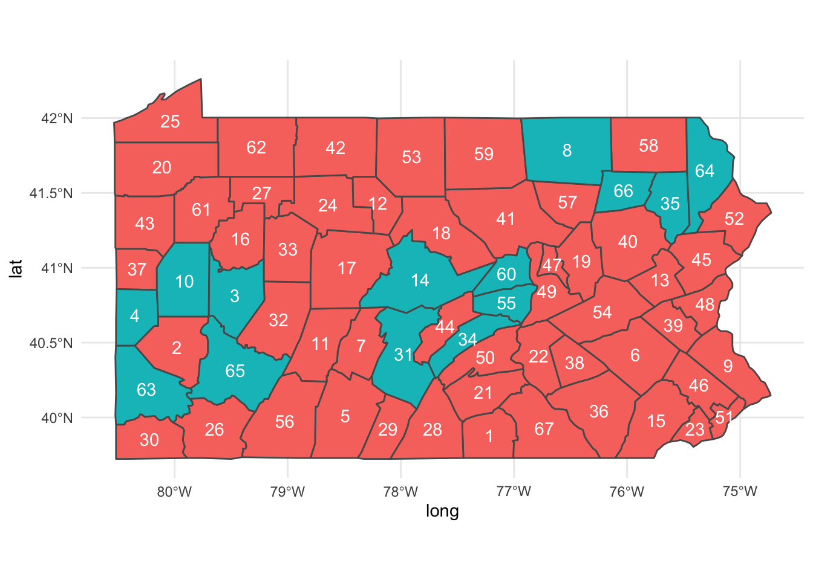
- Lag (lag distance): Relative distance between observation locations.
- Nugget (nugget, nugget variance, or nugget effect): The height of the variogram at zero lag. The nugget is the variation in the values at the observation locations without regard to spatial variation. Related to the observation (or measurement) precision.
- Sill: The height of the variogram at which the values are uncorrelated.
- Relative nugget effect: The ratio of the nugget to the sill expressed as a percentage.
- Range: The distance beyond which the values are uncorrelated. The range is indicated on the empirical variogram as the position along the horizontal axis where values of the variogram reach a constant height.
Additional terms. * Isotropy: The condition in which spatial correlation is the same in all directions. * Anisotropy: (an-I-so-trop-y) spatial correlation is stronger or more persistent in some directions. * Directional variogram: Distance and direction are important in characterizing the spatial correlations. Otherwise the variogram is called omni-directional. * Azimuth (\(\theta\)): Defines the direction of the variogram in degrees.The azimuth is measured clockwise from north. * Lag spacing: The distance between successive lags is called the lag spacing or lag increment. * Lag tolerance: The distance allowable for observational pairs at a specified lag. With arbitrary observation locations there will be no observations exactly a lag distance from any observation. Lag tolerance provides a range of distances to be used for computing values of the variogram at a specified lag.
1.1.5 Variogram Models
Computing the sample variogram is the first step in modeling geostatistical data. The next step is to fit a model to these variogram estimates. We replace a scatter of points with a statistical model.
The model is important since the sample variogram is made only at specified lag distances (with specified lag tolerance and azimuth). We need a continuous function that varies smoothly across all lags.
Variogram models come from different families. The decision includes (1) choosing the model family and (2) determining the parameters: nugget, sill, and range.
The exponential model family reaches the sill asymptotically. The range (a) is defined as the lag distance at which gamma reaches 95% of the sill.
c0 <- .1
c1 <- 2.1
a <- 1.3
curve(c0 + c1*(1 - exp(-3*x/a)),
from = .01, to = 3,
xlab = "h",
ylab = expression(paste(hat(gamma), "(h)")),
las = 1)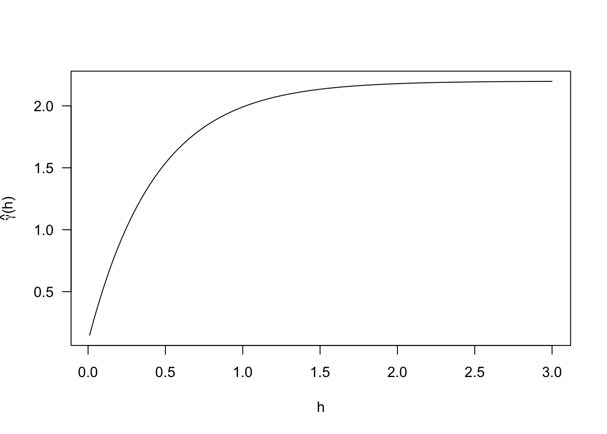
The spherical model family is piece wise reaching the sill at x = 1 (here).
curve(c0 + c1*(3*x/2 - x^3/2),
from = .01, to = 1,
xlab = "h",
ylab = expression(paste(hat(gamma), "(h)")),
las = 1)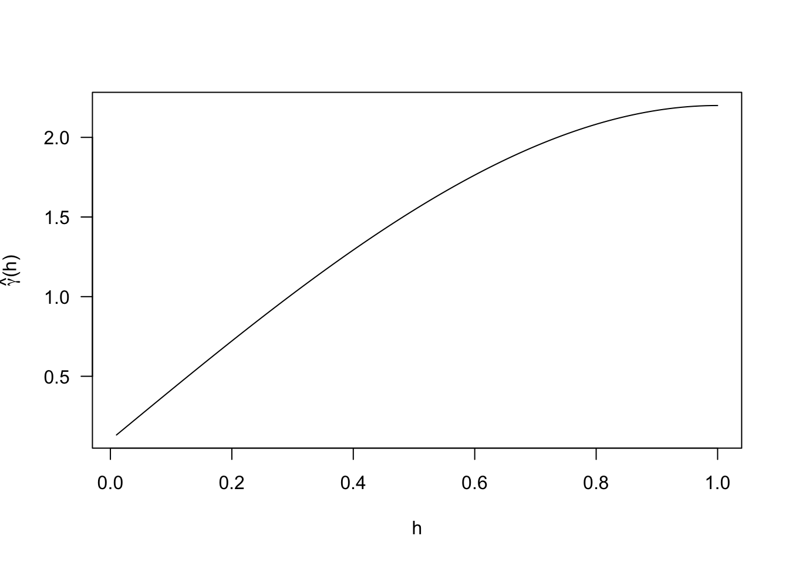
The Gaussian model family is sigmoidal. It is used when the data exhibit strong correlations at the shortest lag distances. The inflection point of the model occurs at \(\sqrt{a/6}\).
curve(c0 + c1*(1 - exp(-3*x^2/a^2)),
from = .01, to = 3,
xlab = "h",
ylab = expression(paste(hat(gamma), "(h)")),
las = 1)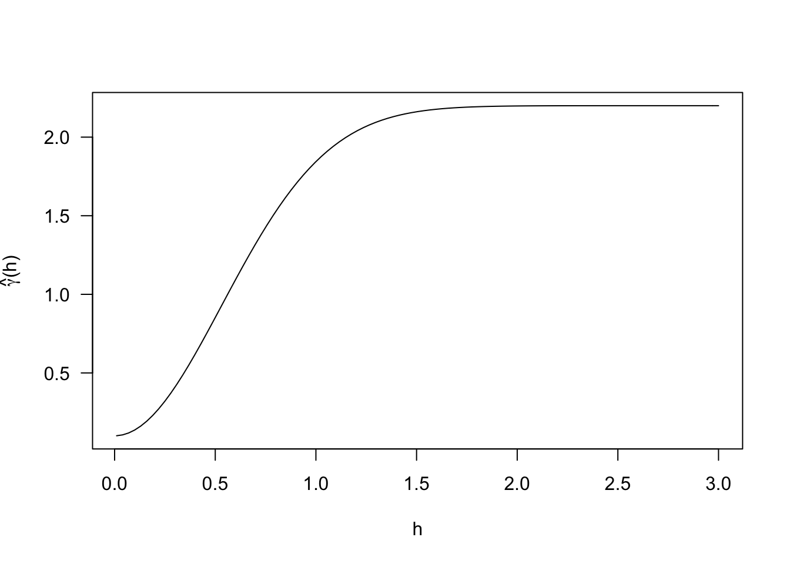
Other families include
- Linear models: \(\hat \gamma(h)\) = c0 + b * h.
- Power models: \(\hat \gamma(h)\) = c0 + b * h\(^\lambda\).
These models have no sill.
Choosing a variogram family is largely done by eyeballing the shape of the sample variogram. Then, given a sample variogram computed from a set of spatial observations and a choice of family, the parameters of the variogram model are determined by a weighted least-squares (WLS) algorithm. There are other ways to determine the parameters including by eye, and by the method of maximum likelihoods, but WLS is less erratic than other methods and it requires fewer assumptions about the distribution of the data.
1.1.6 Kriging
The final step is kriging. Kriging interpolates the observed data using the variogram model. It was developed by a South African miner (D.G. Krige) as a way to improve estimates of where ore reserves might be located. Extraction costs are reduced substantially if good predictions can be made of where the ore resides given samples taken across the mine.
A kriged estimate is a weighted average of the observations where the weights are based on the variogram model. The kriged estimates are optimal in the sense that they minimize the error variance. The type of kriging depends on the characteristics of the observations and the purpose of interpolation.
- Simple kriging assumes a known constant mean for the domain.
- Ordinary kriging assumes an unknown constant mean.
- Universal kriging assumes an unknown linear or nonlinear trend in the mean.
The steps are:
- Examine the observations for trends and isotropy.
- Compute an empirical variogram.
- Fit a variogram model to the empirical variogram.
- Create an interpolated surface using kriging.
1.2 Working with {geoR} data
The {geoR} package has functions for doing geostatistics. There are others but it was one of the first and it is useful for learning how things work.
Suppose we have the following set of observations (zobs) at locations (sx, sy).
sx <- c(1.1, 3.2, 2.1, 4.9, 5.5, 7, 7.8, 9, 2.3, 6.9)
sy <- c(3, 3.5, 6, 1.5, 5.5, 3.2, 1, 4.5, 1, 7)
zobs <- c(-0.6117, -2.4232, -0.42, -0.2522, -2.0362, 0.9814, 1.842,
0.1723, -0.0811, -0.3896)Create a data frame and plot the observed values at the locations using the geom_text() function.
df <- data.frame(sx, sy, zobs)
library(ggplot2)
ggplot(df, aes(x = sx, y = sy, label = zobs)) +
geom_text() +
theme_minimal()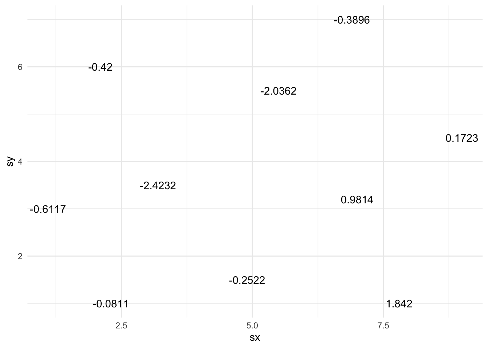
Lag distance (distance between locations) is the independent variable in the variogram function. We get all pairwise distances by applying the dist() function to a matrix of spatial coordinates.
## 1 2 3 4 5 6 7 8
## 2 2.158703
## 3 3.162278 2.731300
## 4 4.085340 2.624881 5.300000
## 5 5.060632 3.047950 3.436568 4.044750
## 6 5.903389 3.811824 5.643580 2.701851 2.745906
## 7 6.992138 5.235456 7.582216 2.942788 5.053712 2.340940
## 8 8.041144 5.885576 7.061161 5.080354 3.640055 2.385372 3.700000
## 9 2.332381 2.657066 5.003998 2.647640 5.521775 5.189412 5.500000 7.559100
## 10 7.045566 5.093133 4.903060 5.852350 2.051828 3.801316 6.067125 3.264966
## 9
## 2
## 3
## 4
## 5
## 6
## 7
## 8
## 9
## 10 7.560423## [1] 8.041144## [1] 2.051828The function computes a pairwise distance matrix. The distance between the first and second observation is 2.16 units and so on. The largest lag distance is 8.04 units and the smallest lag distance is 2.05 units.
The functions in the {geoR} package work with objects of class geodata. Thus we first need to convert the data frame of observations and locations into a geodata object.
This is done with the as.geodata() function. The default for the function is to assume that the first two columns of the data frame contain the coordinates and the third column contains the observed data values. This is the way we constructed the data frame so we can use the defaults.
## List of 2
## $ sx , sy : num [1:10, 1:2] 1.1 3.2 2.1 4.9 5.5 7 7.8 9 2.3 6.9 ...
## ..- attr(*, "dimnames")=List of 2
## .. ..$ : NULL
## .. ..$ : chr [1:2] "sx" "sy"
## $ data : num [1:10] -0.612 -2.423 -0.42 -0.252 -2.036 ...
## - attr(*, "class")= chr "geodata"An object of class geodata contains two lists: the coordinates of the locations and the observed values as data. It may contain other elements like coordinate boundaries but unlike working with ppp objects with functions from the {spatstat} package a boundary defining the domain is not required.
For an arbitrary data frame we can specify where the coordinate and data columns by column numbers. For example, if the location coordinates are in columns five and six and the observed values are in column eight then use coords.col = c(5, 6) and data.col = 8.
With the class set to geodata methods like summary and plot provide attribute and spatial information about the observations. For example the summary() method outputs the number of observations, a summary of the coordinates and a summary of the observed values.
## Number of data points: 10
##
## Coordinates summary
## sx sy
## min 1.1 1
## max 9.0 7
##
## Distance summary
## min max
## 2.051828 8.041144
##
## Data summary
## Min. 1st Qu. Median Mean 3rd Qu. Max.
## -2.423200 -0.563775 -0.320900 -0.321830 0.108950 1.842000We access the coordinates and the data using the $ operator.
## sx sy
## [1,] 1.1 3.0
## [2,] 3.2 3.5
## [3,] 2.1 6.0
## [4,] 4.9 1.5
## [5,] 5.5 5.5
## [6,] 7.0 3.2
## [7,] 7.8 1.0
## [8,] 9.0 4.5
## [9,] 2.3 1.0
## [10,] 6.9 7.0## [1] -0.6117 -2.4232 -0.4200 -0.2522 -2.0362 0.9814 1.8420 0.1723 -0.0811
## [10] -0.3896The plot() method produces a four panel plot.
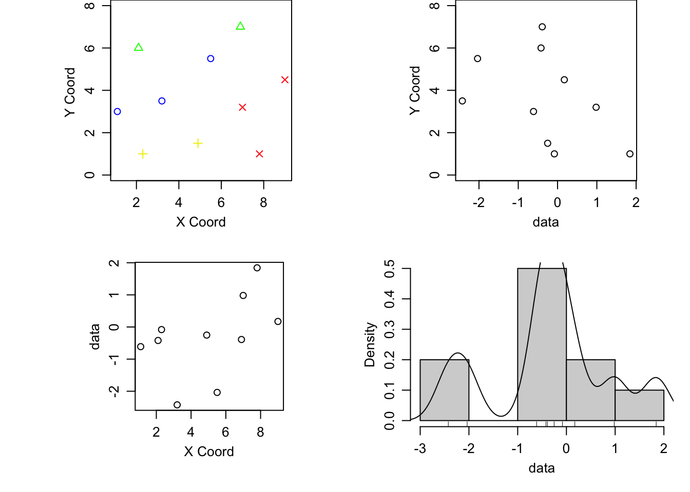
The upper left panel is a map with the locations of the observations given by colors and symbols according to their values. Green triangles have the smallest values and red crosses have the largest values. We can see an upward trend in values from northwest to southeast.
This trend is decomposed in the upper right and lower left panels. The upper-right panel shows the north-south (Y Coord) coordinate plotted against the data values. As the data values increase to the right the north-south coordinate decreases (smaller data values are in the north). The lower-left panel shows the data plotted against the east-west (X Coord). Moving from west to east we see the data values tend to increase.
The lower right panel is a non-spatial distribution of the data values shown with a histogram, and density curve, and a rug plot.
To plot the trend in the east-west direction, type
ggplot(df, aes(x = sx, y = zobs)) +
geom_point() +
geom_smooth(method = lm, se = FALSE) +
theme_minimal()## `geom_smooth()` using formula 'y ~ x'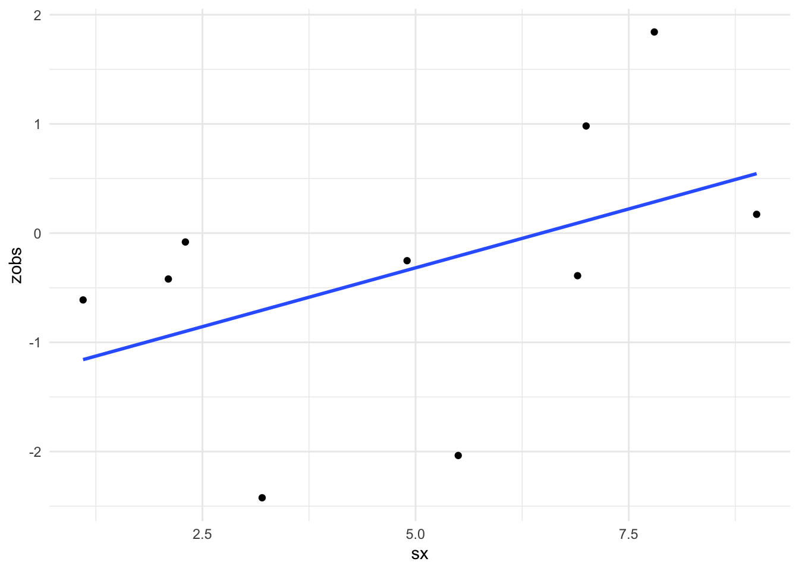
The data can be plotted with the trend removed. The trend = "1st" refers to a linear (first-order) trend.
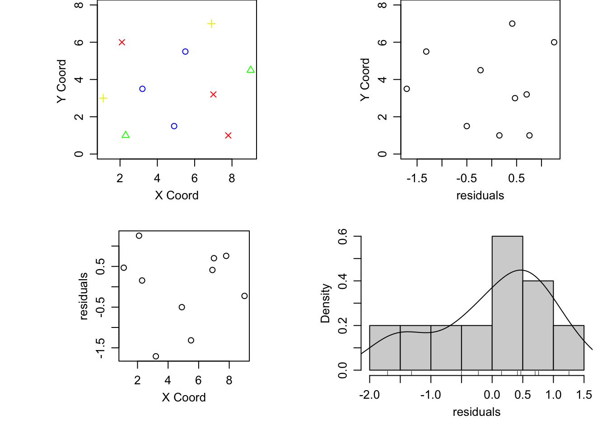
Now the plots show the residuals from the first-order trend model.
As another example, consider the dataset called topo from the {MASS} package. The data are topographic heights (feet) within a 310 sq ft domain.
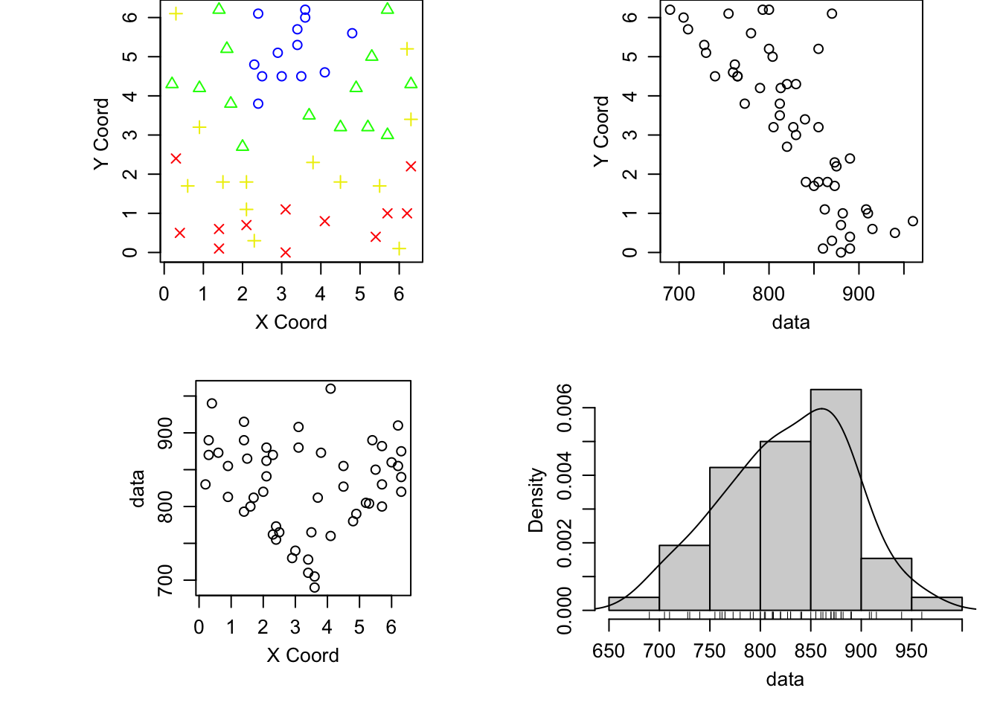
Note the trend in the north-south direction and the skewness in the observed values.
Examine the residuals after removing a first-order trend from the observations.
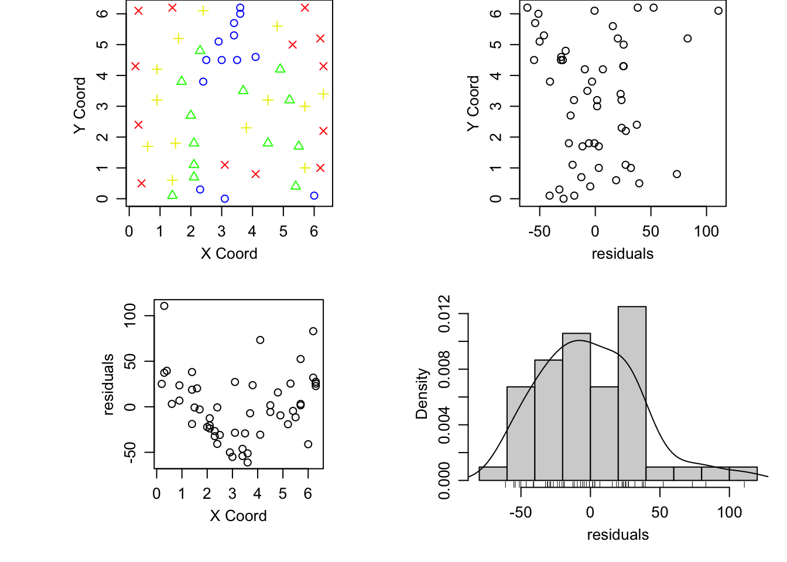
The north-south trend is removed and the observations have a more symmetric distribution. There appears to be some non-linear trend in the east-west direction.
Examine the residuals after removing a second-order trend.
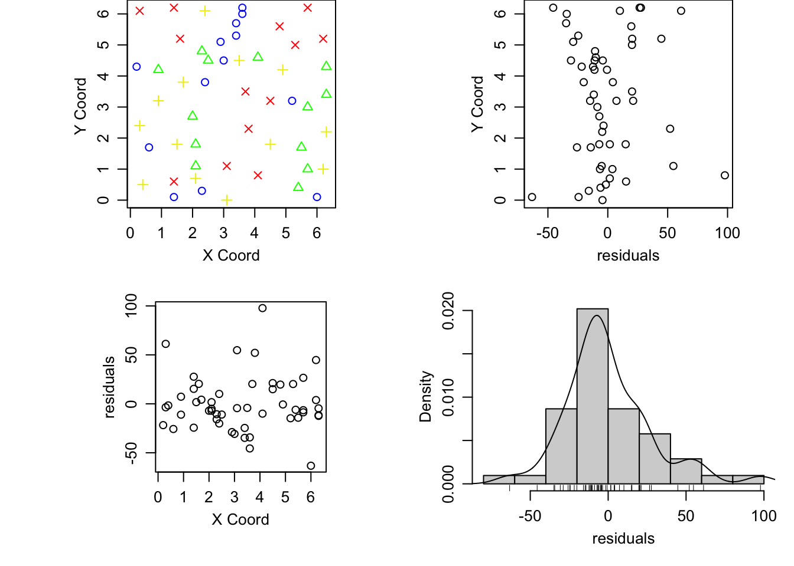
The residuals from a second-order polynomial fit are symmetric and the trends are gone. However, the residuals appear to show spatial autocorrelations (areas with above and below residuals).
1.2.1 Empirical variograms
Consider the dataset s100 available from the {geoR} package. The points.geodata() function produces a bubble plot showing the locations of the observations and the relative magnitude of the z variable.
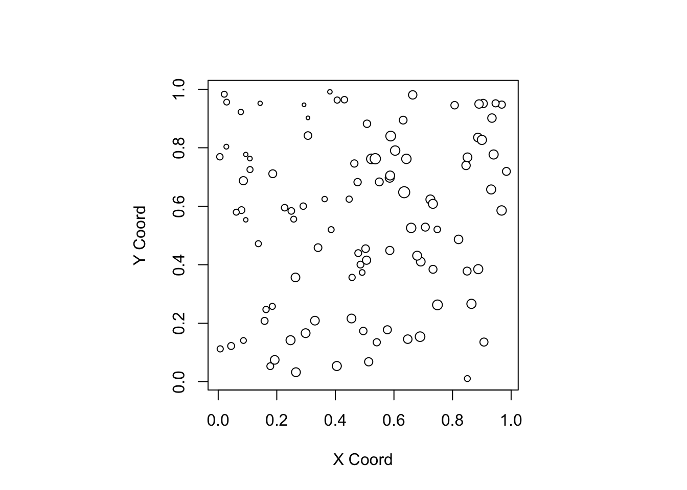
The variog() function computes the empirical variogram. Here we save it in the object s100.v.
## variog: computing omnidirectional variogram## List of 20
## $ u : num [1:13] 0.0492 0.1475 0.2458 0.3441 0.4424 ...
## $ v : num [1:13] 0.271 0.372 0.553 0.596 0.609 ...
## $ n : num [1:13] 140 341 524 691 667 707 573 474 415 257 ...
## $ sd : num [1:13] 0.417 0.499 0.829 0.876 0.934 ...
## $ bins.lim : num [1:14] 1.00e-12 9.83e-02 1.97e-01 2.95e-01 3.93e-01 ...
## $ ind.bin : logi [1:13] TRUE TRUE TRUE TRUE TRUE TRUE ...
## $ var.mark : num 0.732
## $ beta.ols : num 0.931
## $ output.type : chr "bin"
## $ max.dist : num 1.28
## $ estimator.type : chr "classical"
## $ n.data : int 100
## $ lambda : num 1
## $ trend : chr "cte"
## $ pairs.min : num 2
## $ nugget.tolerance: num 1e-12
## $ direction : chr "omnidirectional"
## $ tolerance : chr "none"
## $ uvec : num [1:13] 0.0492 0.1475 0.2458 0.3441 0.4424 ...
## $ call : language variog(geodata = s100)
## - attr(*, "class")= chr "variogram"Information in the variogram object includes the lag distances (u), the values of the variogram at those distances (v), the number of distance pairs used to compute the variogram values at each lag (n), the standard deviation of the variogram values, and the coefficients of the trend surface (with no trend, the value is the overall mean of the data) (beta.ols) among other information.
Note: Mathematically lag distance is denoted with \(h\) but in the {geoR} package it is u.
Verify the mean value.
## [1] 0.9307179Plot the variogram.
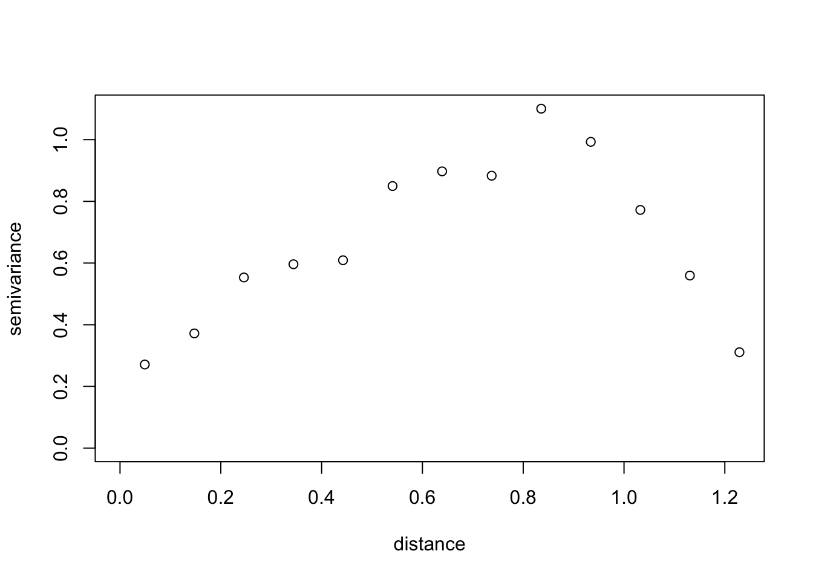
The semivariance (\(\gamma(u)\)) is plotted against lag distance (\(u\)). Values increase with increasing lag until a lag distance of about 1.
At large lags there are fewer estimates so the values have greater variance. A model for the semivariance is fit only for the the increasing portion of the graph.
Another example: variogram of the topo dataset.
## variog: computing omnidirectional variogramplot(topo.v, xlab = "Lagged Distance",
ylab = expression(paste(gamma, "(u) [ft", {}^2, "]")),
las = 1, pch = 16)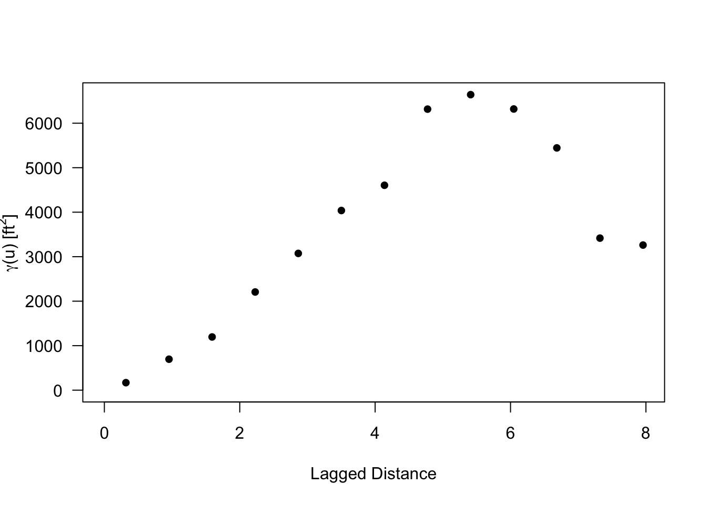
The variogram values have units of square feet and are calculated using point pairs at lag distances within a lag tolerance. The number of point pairs depends on the lag so the variogram values are less precise at large distance.
Plot the number of point pairs used as a function of lag distance.
ggplot(data.frame(u = topo.v$u, n = topo.v$n), aes(x = u, y = n)) +
geom_point() +
xlab("Lag Distance") + ylab("Number of Observation Pairs") +
theme_minimal()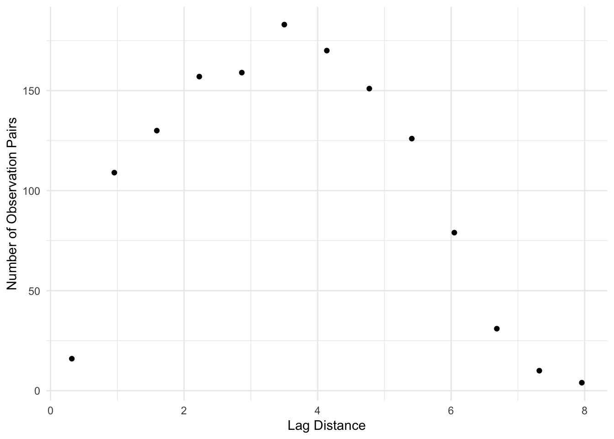
1.2.2 Wolfcamp aquifer data
Some years ago there were three nuclear waste repository sites being proposed in Nevada, Texas, and Washington. The site needs to be larger enough for more than 68,000 high-level waste containers placed underground, about 9 m (~30 feet) apart, in trenches surrounded by salt. In July of 2002 the Congress approved Yucca Mountain, Nevada, as the nation’s first long-term geological repository for spent nuclear fuel and high-level radioactive waste.
The site must isolate the waste for 10,000 years. Leaks could occur, however, or radioactive heat could cause tiny quantities of water in the salt to migrate toward the heat until eventually each canister is surrounded by 22.5 liters of water (~6 gallons). A chemical reaction of salt and water can create hydrochloric acid that might corrode the canisters.
The piezometric-head data at the site were obtained by drilling a narrow pipe into the aquifer and letting water seeks its own level in the pipe (piezometer).
The head measurements, given in units of feet above sea level, are from drill stem tests and indicate the total energy of the water in units of height. The higher the head height, the greater the potential energy.
Water flows away from areas of high potential energy so aquifer discharge is proportional to the gradient of the piezometric head.
The data are in wolfcamp.csv on my website.
1.2.2.1 Step 1: Examine the observed data for trends, check for normality
Get the data.
Create a simple feature data frame and then map the locations and head heights.
## Linking to GEOS 3.7.2, GDAL 2.4.2, PROJ 5.2.0wca.sf <- st_as_sf(x = wca.df,
coords = c("lon", "lat"),
crs = "+proj=longlat +datum=WGS84")
library(mapview)
mapView(wca.sf,
zcol = "head")Convert the data frame to a geodata object. Note there is no method to do this from a simple feature.
## as.geodata: 1 replicated data locations found.
## Consider using jitterDupCoords() for jittering replicated locations.
## WARNING: there are data at coincident or very closed locations, some of the geoR's functions may not work.
## Use function dup.coords() to locate duplicated coordinates.
## Consider using jitterDupCoords() for jittering replicated locationsFind the duplicate location(s).
## dup lon lat data
## 30 1 -102.04 33.87 2386
## 31 2 -102.04 33.87 2400The locations are the same, but the data values are different. This may represent an error or multiple measurements at this one location.
We can average the values or we can exclude a row. Here we remove the row 30 observation.
## Number of data points: 84
##
## Coordinates summary
## lon lat
## min -104.55 33.51
## max -100.02 36.09
##
## Distance summary
## min max
## 0.010000 4.648978
##
## Data summary
## Min. 1st Qu. Median Mean 3rd Qu. Max.
## 1024.000 1542.750 1787.000 1997.714 2541.000 3571.000There are 84 well sites. The spatial bounding box is given under coordinates summary. The minimum distance between sites is .01 degrees and the maximum distance is 4.6 degrees.
The data values are summarized. The values are piezometric head heights in units of feet.
The plot() method for geodata provides a panel of plots with information about the data useful for modeling them.
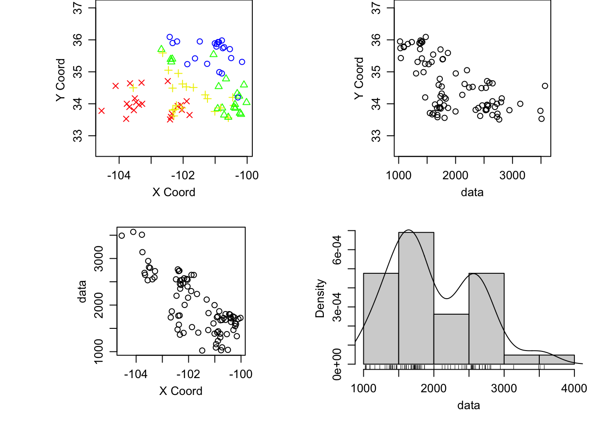
The upper left panel is a graph of the observed locations with symbols reflecting quartiles of the observed piezometric head heights. There is a clear trend in the data with the highest potential energy over the southwest (red crosses) and lowest over the northeast (blue circles).
The nature of this trend can be seen in the upper right and lower left panels. The upper right panel plots the data against the y coordinate and the lower left panel plots the data against the x coordinate. Both graphs indicate a linear trend.
A histogram of the head heights is shown in the lower right panel. The rug locates the values along the data axis. The data are bi-modal and skewed to the right.
Repeat the plot after removing the 1st order trend. What happens?
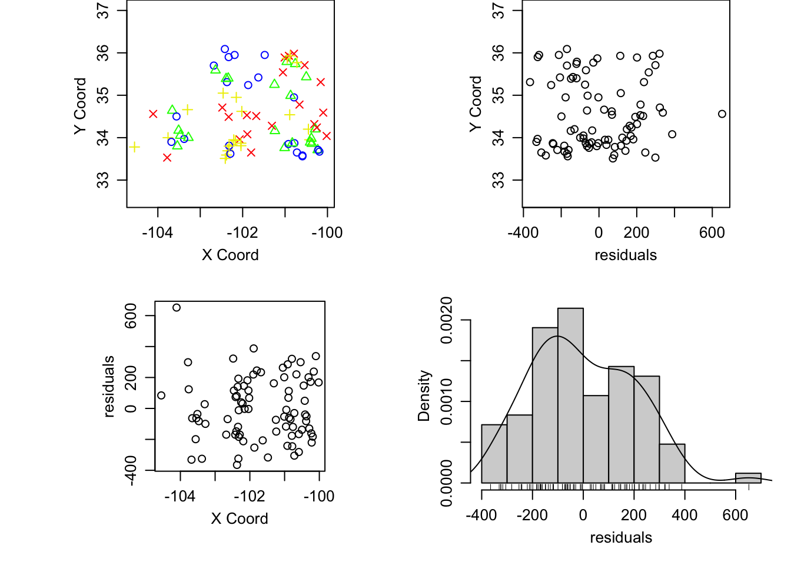
With the trend removed the variation of values appears to be roughly symmetric and the high and low values are mixed. However, there is some spatial grouping to the residuals.
1.2.2.2 Step 2: Compute empirical variograms
We noted the maximum distance between any two locations is 4.6 degrees. It is a good idea to plot the variogram values for distances only between 0 and about 1/2 the maximum distance.
Since there is a linear trend in the data over the spatial domain it is removed (trend argument) before computing the variogram values.
## variog: computing omnidirectional variogram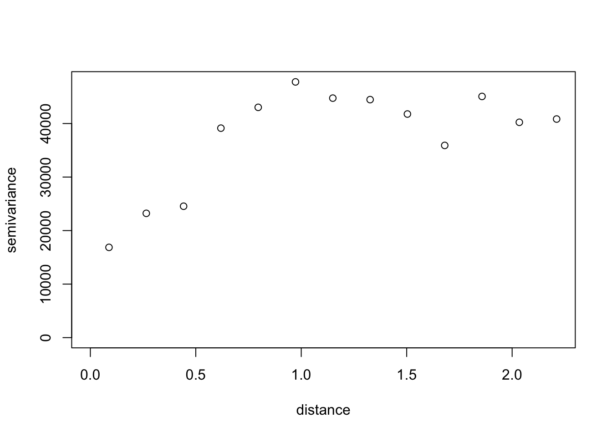
Here we see an increase in the variance with distance until about one degree, then the values fluctuate about a variance of about 41000 (ft\(^2\)).
What does the variogram look like if we do not first remove the trend?
This continuously increasing set of variances with little fluctuation about a best fit curve indicates a trend in the data that must be removed before the variogram is modeled.
There are two sources of variation in the field values: trend and spatial correlation. Trends are modeled with smooth curves and correlations are modeled with the variogram.
The variog() function has options for specifying a classical or modulus estimator. By default the function uses the classical estimator. To override this, include the estimator.type = "modulus" argument. The modulus estimator of the variogram is more resistant to outliers in the data.
Compare the classical with the modulus variograms for the Wolfcamp aquifer data.
## variog: computing omnidirectional variogram## variog: computing omnidirectional variogram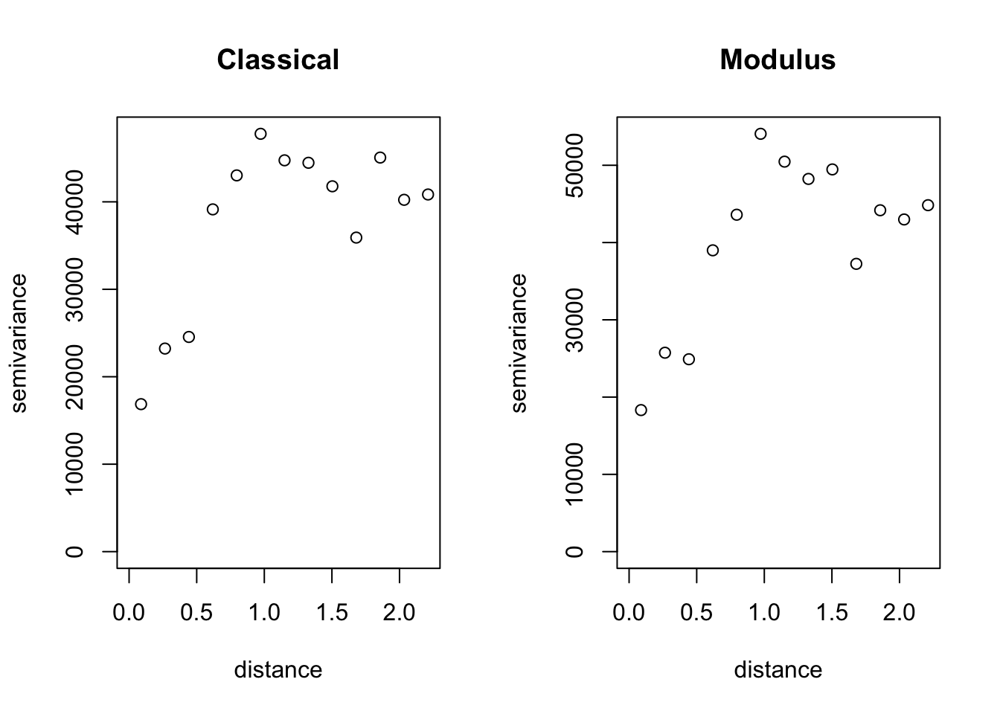
The two variograms are nearly identical.
1.2.3 Variogram cloud
We can examine the makeup of the variogram in more detail using a ‘variogram cloud’. Consider again the simulated data set s100.
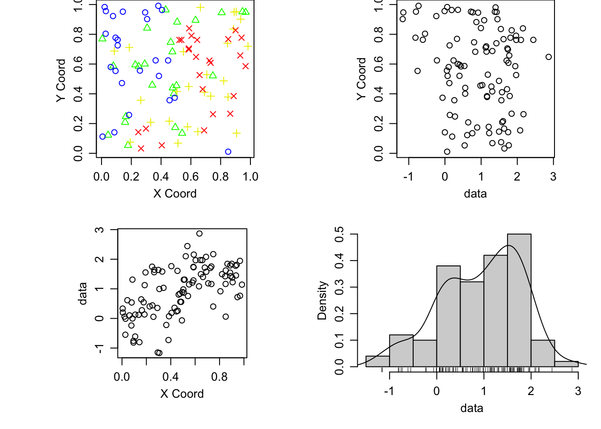
There appears to be a trend in the east-west direction with higher values in the east. This is seen clearly in the bottom left panel.
Remove this first-order trend.
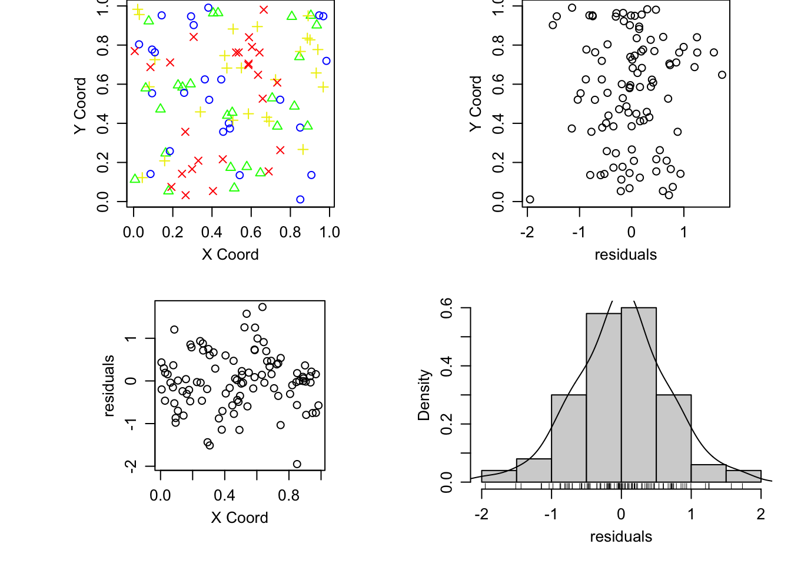
We can see that the trend is adequately modeled with a 1st-order surface. Residuals appear symmetric about zero.
A summary of the data indicates the maximum lagged distance of 1.3 so the max.dist argument is set to .6.
## Number of data points: 100
##
## Coordinates summary
## Coord.X Coord.Y
## min 0.005638006 0.01091027
## max 0.983920544 0.99124979
##
## Distance summary
## min max
## 0.007640962 1.278175109
##
## Data summary
## Min. 1st Qu. Median Mean 3rd Qu. Max.
## -1.1676955 0.2729882 1.1045936 0.9307179 1.6101707 2.8678969
##
## Other elements in the geodata object
## [1] "cov.model" "nugget" "cov.pars" "kappa" "lambda"Here we specify the eleven variogram estimates between 0 and .6 using the uvec argument.
## variog: computing omnidirectional variogram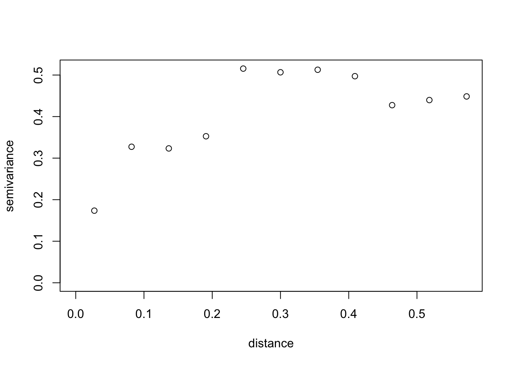
We ‘decompose’ the variogram estimates with the option = "cloud".
## variog: computing omnidirectional variogram
Each point on the plot is the difference (absolute value) between two observed values (y-axis) a lag distance apart (x-axis). There are 100 observations so there are 100 * 99/2 = 4950 possible points on this plot. Actually here only 3131 since we limit the distance to less than .6 degrees.
There is a tendency for more large differences as the lag increases but most differences are small for a given lag. The variability in observational differences is quite large especially for longer lag distances.
The variogram computes the sum of the squared differences as a function of lag distance grouped by a lag tolerance. Here we indirectly specify the lag tolerance with the uvec argument and compare the variogram with the variogram cloud.
## variog: computing omnidirectional variogram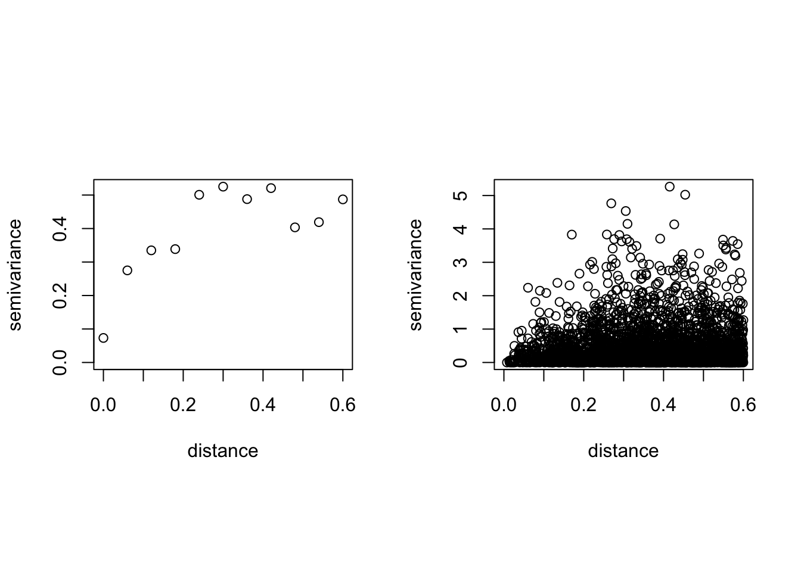
Note the difference in the scale on the y-axis between the variogram cloud and the variogram is a factor of 10.
The variogram cloud can be grouped into lag distance classes (bins) and displayed with a box plot. This gives an idea of the general shape the variogram model should take.
par(mfrow = c(1, 1))
b1 <- variog(s100, trend = "1st",
max.dist = .6,
bin.cloud = TRUE,
estimator.type = "classical")## variog: computing omnidirectional variogram
The box plot summarizes the squared differences for a given lag (and lag tolerance) with the median. There is a box plot for each lag but the lag distance is given as a bin number.
This summary information helps us anticipate the type of variogram model. As an aside, note how to use the expression and paste functions to include symbols as part of the axis label.
df <- data.frame(u = b1$u, v = b1$v)
ggplot(df, aes(u, v)) +
geom_point() +
geom_smooth(span = .8) +
scale_y_continuous(limits = c(0, .6)) +
ylab(expression(paste("Variogram [", gamma,"(h)]"))) +
xlab("Lagged distance (h)")## `geom_smooth()` using method = 'loess' and formula 'y ~ x'
The blue line is a least-squares regression smoother through the variogram estimates. The fact that it is not horizontal indicates spatial autocorrelation in the values that is separate from the first-order trend. The shape of the blue line gives an idea of the type of variogram family of models we should consider.
Now we can guess at a family for the variogram model and eyeball the parameters. Recall the plot from Lesson 18. This is called variography. We will discuss this in Lesson 20.
plot(variog(s100, max.dist = 1),
xlab = "Lagged Distance (h)",
ylab = expression(paste(gamma,"(h)")),
las = 1, pch = 16)## variog: computing omnidirectional variogramabline(h = 0)
abline(h = .15, col = "red")
arrows(0, 0, x1 = 0, y1 = .15, length = .1)
text(0, y = .05, labels = "nugget", pos=4)
abline(h = .9, col = "red")
arrows(0, .15, x1 = 0, y1 = .9, length = .1)
text(0, y = .8, labels="sill (partial sill)", pos=4)
abline(v = .6, col = "red")
arrows(0, 1, x1 = .6, y1 = 1, length = .1)
text(.4, y = 1.04, labels = "range")
- Lag (lag distance): Relative distance between observation locations.
- Nugget (nugget, nugget variance, or nugget effect): The height of the variogram at zero lag. The nugget is the variation in the values at the observation locations without regard to spatial variation. Related to the observation (or measurement) precision.
- Sill: The height of the variogram at which the values are uncorrelated.
- Relative nugget effect: The ratio of the nugget to the sill expressed as a percentage.
- Range: The distance beyond which the values are uncorrelated. The range is indicated on the empirical variogram as the position along the horizontal axis where values of the variogram reach a constant height.
1.2.4 Directional variograms
Recall that the assumption of isotropy implies the same spatial autocorrelation function regardless of direction.
To examine the assumption of isotropy we compute variograms using observational pairs located along the same orientation. Instead of considering all observational pairs within a lag distance \(h\) and lag tolerance \(\delta h\), we consider only pairs within a wedge-shaped segment of this annulus.
This is done with the variog() function and specifying a direction = argument in units of radians. Radians are fractions of pi. We also need to specify the angle tolerance.
For example to compute and plot the variogram for the direction of 45 degrees (NE to SW) with a default tolerance of 22.5 degrees (default), type
## variog: computing variogram for direction = 45 degrees (0.785 radians)
## tolerance angle = 22.5 degrees (0.393 radians)
Repeat for the other three quadrants (increments of \(\pi\)/4).
par(mfrow = c(2, 2))
plot(variog(wca.gdf, trend = "1st",
max.dist = 2.3, direction = 0),
main = expression(0 * degree))## variog: computing variogram for direction = 0 degrees (0 radians)
## tolerance angle = 22.5 degrees (0.393 radians)plot(variog(wca.gdf, trend = "1st",
max.dist = 2.3, direction = pi/4),
main = expression(45 * degree))## variog: computing variogram for direction = 45 degrees (0.785 radians)
## tolerance angle = 22.5 degrees (0.393 radians)plot(variog(wca.gdf, trend = "1st",
max.dist = 2.3, direction = pi/2),
main = expression(90 * degree))## variog: computing variogram for direction = 90 degrees (1.571 radians)
## tolerance angle = 22.5 degrees (0.393 radians)plot(variog(wca.gdf, trend = "1st",
max.dist = 2.3, direction = 3 * pi/4),
main = expression(135 * degree))## variog: computing variogram for direction = 135 degrees (2.356 radians)
## tolerance angle = 22.5 degrees (0.393 radians)
The variograms appear similar but it’s difficult to tell since the vertical scales are not all the same. The variog4() function makes the comparison easier by plotting them on the same graph. It works like variog() but takes a vector of directions. The default directions are 0, 45, 90, and 135 degrees.
## variog: computing variogram for direction = 0 degrees (0 radians)
## tolerance angle = 22.5 degrees (0.393 radians)
## variog: computing variogram for direction = 45 degrees (0.785 radians)
## tolerance angle = 22.5 degrees (0.393 radians)
## variog: computing variogram for direction = 90 degrees (1.571 radians)
## tolerance angle = 22.5 degrees (0.393 radians)
## variog: computing variogram for direction = 135 degrees (2.356 radians)
## tolerance angle = 22.5 degrees (0.393 radians)
## variog: computing omnidirectional variogram
This plot makes it clear that the assumption of isotropy is reasonable.
1.2.4.1 Step 3: Fit a variogram model to the empirical variogram
Next we fit a curve through the set of points that make up the empirical variogram. The curve is called the variogram model.
Since the s100 data were generated using a variogram model, we already know the answer. The model is exponential with a sill (partial) of 1, a range of .3, and a nugget of 0.
Plot the empirical variogram values and overlay the curve corresponding to the exponential model with the lines.variomodel() function. The sill and range parameters are given in order using the cov.pars argument.
## variog: computing omnidirectional variogramlines.variomodel(cov.model = "exp",
cov.pars = c(1, .3), nugget = 0,
max.dist = 1.2, lwd = 2, col = "red")
Note that the practical range for the exponential model is the distance along the horizontal axis at which the curve reaches 95% of the sill which is 3 times the range specified in the cov.pars argument.
The uvec = argument allows control over the range of distance values and the number of variogram estimates. We specify the maximum distance in the lines.variomodel() function.
With observed data we don’t know the model so we estimate the parameters using information from the empirical variogram.
- By eye: Trial and error over several models and parameter values. The
lines.variomodel()function can help.
- By least squares fit: Using ordinary least squares (OLS) or weighted least squares (WLS) methods available through the
variofit()function.
- By maximum likelihood methods: Options for maximum likelihood (ML) and restricted maximum likelihood (REML) are available through the
likfit()function.
Try various curves and choosing the one that looks the best. Here we plot three models on top of the s100 empirical variogram.
## variog: computing omnidirectional variogramlines.variomodel(cov.model = "exp",
cov.pars = c(1, .3),
nug = 0, max.dist = 1)
lines.variomodel(cov.model = "exp",
cov.pars = c(1, .5),
nug = .1, max.dist = 1,
col = "red")
lines.variomodel(cov.model = "sph",
cov.pars = c(.8, .8),
nug = .1, max.dist = 1,
col = "blue")
The black line is the model used to generate the s100 dataset. The red line is based on the same exponential (exp) function but has a range of .5 and a nugget of .1. The blue line is based on a spherical function with a sill and range of .8 and a nugget of .1. All three models fit the points reasonably well. This is important: In practice the choice often makes little difference in the quality of the spatial interpolation.
A function to help with the fitting is eyefit. This opens a widget with radio buttons and slider bars making it easier to see how the model changes through various parameter sets. CAUTION: Mac users must have X11 installed. X11 is no longer included in OSX.
1.2.4.2 Variogram model for the Wolfcamp aquifer data
Let’s fit a variogram model to the Wolfcamp aquifer data. First plot the empirical variogram. We’ve seen that directional variograms are not needed.
## variog: computing omnidirectional variogram
Begin with a spherical model with a range of .8, a sill of 40000, and a nugget of 10000.
plot(wca.v)
lines.variomodel(cov.model = "sph",
cov.pars = c(30000, .8),
nug = 10000, max.dist = 2.3)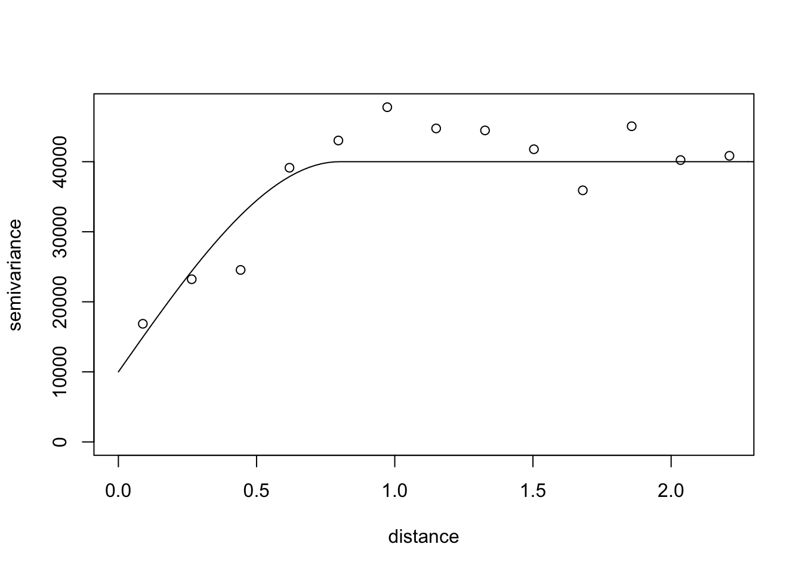
In the cov.pars argument the first value is the “partial” sill and the second is the range. With the nugget set at 10000 and partial sill at 30000, the sill is 400000. The sill and nugget are variance measures so they have units of square feet. The range is distance so it has the corresponding spatial units.
The model looks reasonable. Perhaps the sill should be a bit higher, say 43000. We increase the partial sill accordingly,
plot(wca.v)
lines.variomodel(cov.model="sph",
cov.pars = c(33000, .8),
nug = 10000, max.dist = 2.3,
col = "red")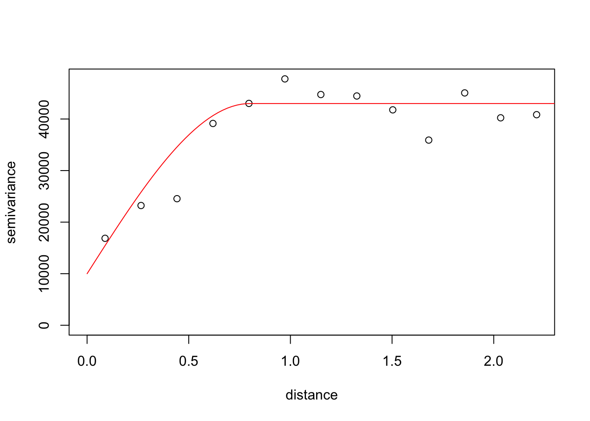
Better still. We try an exponential model with the same sill but the same range.
plot(wca.v)
lines.variomodel(cov.model = "exp",
cov.pars = c(33000, .8/3),
nug = 10000, max.dist = 2.3,
col = "green")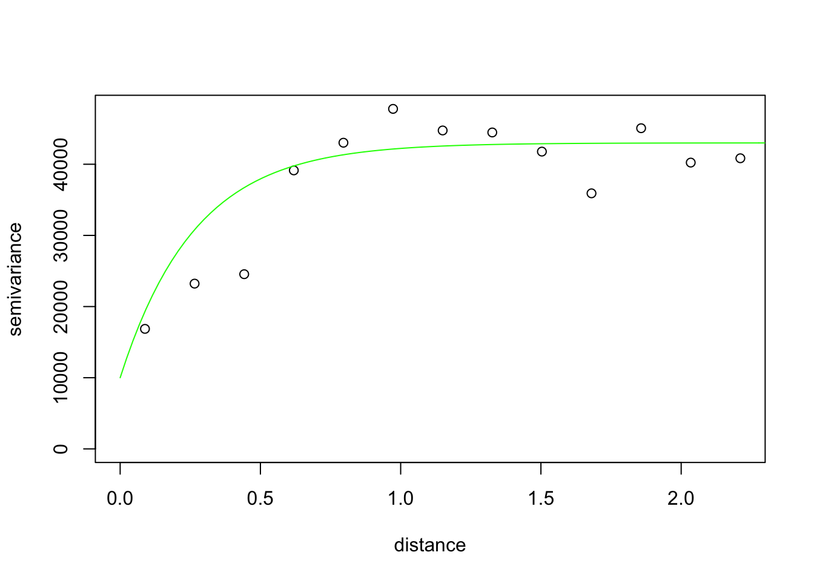
Not as good. The exponential model does not have the sharp turn at the sill. We settle on the spherical model with a sill of 43000, a range of .8, and a nugget of 10000.
1.2.4.3 Fine tune the parameter values
Next we tune the parameter estimates using the variofit() function. The function takes a set of initial parameter values and improves upon them using the method of weighted least squares. Alternatively we can use the likfit() function to fine tune the parameters. Here we use it to adjust the variogram model parameters estimated above. We save the model in the object wca.vm.
## kappa not used for the spherical correlation function
## ---------------------------------------------------------------
## likfit: likelihood maximisation using the function optim.
## likfit: Use control() to pass additional
## arguments for the maximisation function.
## For further details see documentation for optim.
## likfit: It is highly advisable to run this function several
## times with different initial values for the parameters.
## likfit: WARNING: This step can be time demanding!
## ---------------------------------------------------------------
## likfit: end of numerical maximisation.## likfit: estimated model parameters:
## beta0 beta1 beta2 tausq sigmasq phi
## "-23631.36" " -400.41" " -435.60" " 13194.64" " 34569.94" " 1.14"
## Practical Range with cor=0.05 for asymptotic range: 1.139606
##
## likfit: maximised log-likelihood = -553The function improves on the initial set of model parameters until the log-likelihood value is maximized. Any other set of parameters will produce a log likelihood value smaller than -553.
The output includes values for the trend surface. It is a linear trend in two dimensions so it’s represented by a plane with a single z-intercept value (beta0) and two slope values corresponding to the x (beta1) and y (beta2) directions.
The units on the slope parameters are data units per unit spatial distance. Thus the beta1 value is -400 ft/deg longitude. For every one deg longitude east, the piezometric head height decreases by 400 ft. We saw a trend in the SW-NE direction (exploratory plot). The beta1 (beta2) value quantifies this slope in the east-west (north-south) direction.
The output also includes the parameter values for the nugget (tausq), the partial sill (sigmasq) and the range (phi).
Overlay the maximum likelihood solution to the spherical model by typing
## variog: computing omnidirectional variogramlines.variomodel(cov.model = "sph",
cov.pars = c(33000, .8),
nug = 10000, max.dist = 2.3,
col = "red")
lines(wca.vm, col = "blue")
We see the maximum likelihood solution is better at fitting the points at lag distances between .5 and 1. At these lags, the variogram estimates are most reliable as n (number of observation pairs) is largest.
## variog: computing omnidirectional variogram## [1] 194 298 324 395 608 572 393 258 205 155 49 24 10The likfit() function is iterative and should find the same solution using somewhat different starting values. Try it using a partial sill of 30000 a nugget of 5000 and a range of 1.
## kappa not used for the spherical correlation function
## ---------------------------------------------------------------
## likfit: likelihood maximisation using the function optim.
## likfit: Use control() to pass additional
## arguments for the maximisation function.
## For further details see documentation for optim.
## likfit: It is highly advisable to run this function several
## times with different initial values for the parameters.
## likfit: WARNING: This step can be time demanding!
## ---------------------------------------------------------------
## likfit: end of numerical maximisation.## likfit: estimated model parameters:
## beta0 beta1 beta2 tausq sigmasq phi
## "-23631.31" " -400.41" " -435.60" " 13194.57" " 34569.77" " 1.14"
## Practical Range with cor=0.05 for asymptotic range: 1.139588
##
## likfit: maximised log-likelihood = -553A summary function on the likfit output provides more information about the fitted variogram model.
## Summary of the parameter estimation
## -----------------------------------
## Estimation method: maximum likelihood
##
## Parameters of the mean component (trend):
## beta0 beta1 beta2
## -23631.3641 -400.4081 -435.6035
##
## Parameters of the spatial component:
## correlation function: spherical
## (estimated) variance parameter sigmasq (partial sill) = 34570
## (estimated) cor. fct. parameter phi (range parameter) = 1.14
## anisotropy parameters:
## (fixed) anisotropy angle = 0 ( 0 degrees )
## (fixed) anisotropy ratio = 1
##
## Parameter of the error component:
## (estimated) nugget = 13195
##
## Transformation parameter:
## (fixed) Box-Cox parameter = 1 (no transformation)
##
## Practical Range with cor=0.05 for asymptotic range: 1.139606
##
## Maximised Likelihood:
## log.L n.params AIC BIC
## "-553" "6" "1118" "1133"
##
## non spatial model:
## log.L n.params AIC BIC
## "-564.6" "4" "1137" "1147"
##
## Call:
## likfit(geodata = wca.gdf, trend = "1st", ini.cov.pars = c(33000,
## 0.8), nugget = 10000, cov.model = "spherical")The summary provides parameters of the trend model and values of the spatial model parameters. Importantly the summary gives the log likelihood along with the AIC and BIC values. It also gives those values for a non-spatial model. A non-spatial model in this context is the trend plus spatially uncorrelated random variation.
Since the log likelihood value is larger for the spatial model and the AIC and BIC values are smaller, it is clear that a spatial model is better than the non-spatial model.
1.2.4.4 Profile likelihood
The proflik() function gives a matrix of log likelihood values for a range of model parameters. The matrix can then be plotted to get a synoptic view of the relationship between the parameters and the likelihood. This can take a few seconds to compute.
prof <- proflik(wca.vm, geodata = wca.gdf,
sill.val = seq(30000, 60000, length = 6),
range.val = seq(.3, 2.3, length = 6),
nug.val = 10000, uni.only = FALSE)## proflik: computing profile likelihood for the sill
## proflik: computing profile likelihood for the range
## proflik: computing 2-D profile likelihood for the sill and range parameters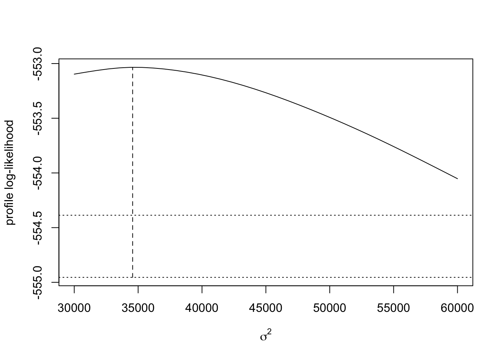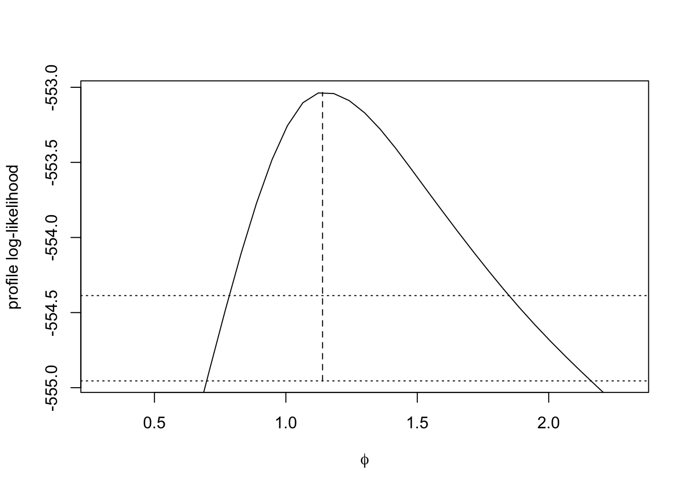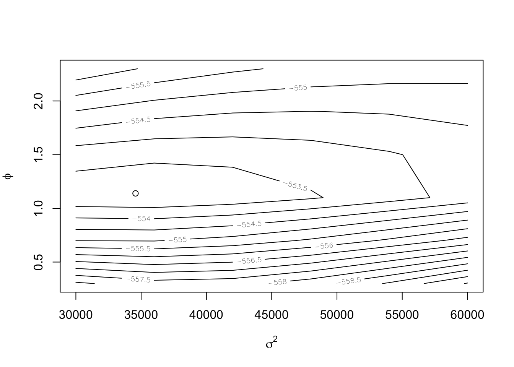
The horizontal axis is the partial sill (\(\sigma^2\)) and the vertical axis is the range (\(\phi\)). The nugget is set at 10000. The best fit parameters are indicated by the circle. At this location the log-likelihood is maximized. The likelihood is near the maximum for a broad set of range and partial sill values.
The marginal profiles are also available and can be plotted alongside the contour plot using
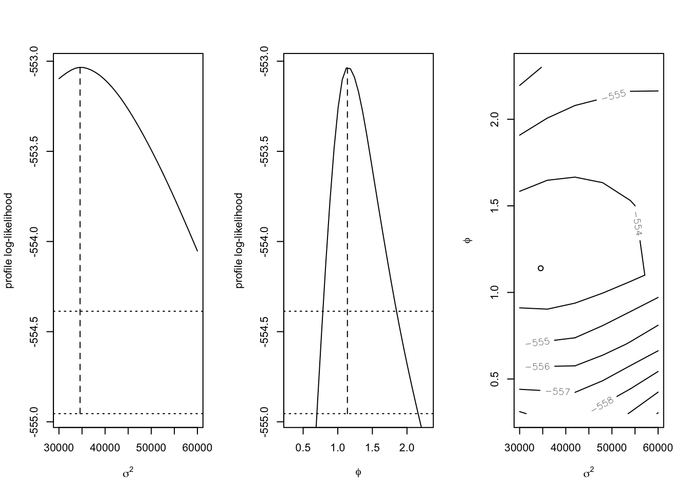
1.2.5 Another example: A variogram model for April temperatures in the Midwest
Let’s finish with another example.
The data in MidwestTemps.txt are average temperatures in and around the state of Iowa for the month of April.
L <- "http://myweb.fsu.edu/jelsner/temp/data/MidwestTemps.txt"
t.df <- read.table(L, header = TRUE)
summary(t.df)## lon lat temp
## Min. :-98.47 Min. :38.59 Min. :41.50
## 1st Qu.:-96.22 1st Qu.:40.22 1st Qu.:47.15
## Median :-93.72 Median :41.55 Median :51.30
## Mean :-93.62 Mean :41.77 Mean :50.61
## 3rd Qu.:-90.77 3rd Qu.:43.36 3rd Qu.:53.85
## Max. :-88.55 Max. :45.46 Max. :58.60Map the data values. Create a geodata object. Plot the empirical variogram using the residuals from a 2nd-order trend model. Fit an exponential model to the variogram using the likfit() function and starting values of 3 for the sill and 4 for the range.
Map the values.
library(tmap)
t.sf <- st_as_sf(x = t.df,
coords = c("lon", "lat"),
crs = "+proj=longlat +datum=WGS84")
library(USAboundaries)
sts <- us_states()
tm_shape(t.sf) +
tm_text(text = "temp", size = .6) +
tm_shape(sts) +
tm_borders() 
Create a geodata object from the data frame.
## Number of data points: 131
##
## Coordinates summary
## lon lat
## min -98.47 38.59
## max -88.55 45.46
##
## Distance summary
## min max
## 0.1004988 11.5354237
##
## Data summary
## Min. 1st Qu. Median Mean 3rd Qu. Max.
## 41.50000 47.15000 51.30000 50.61298 53.85000 58.60000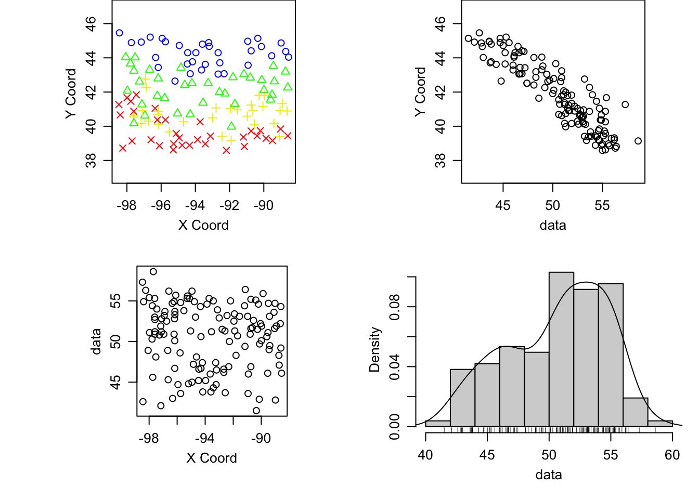
Remove the trends and examine the residuals.

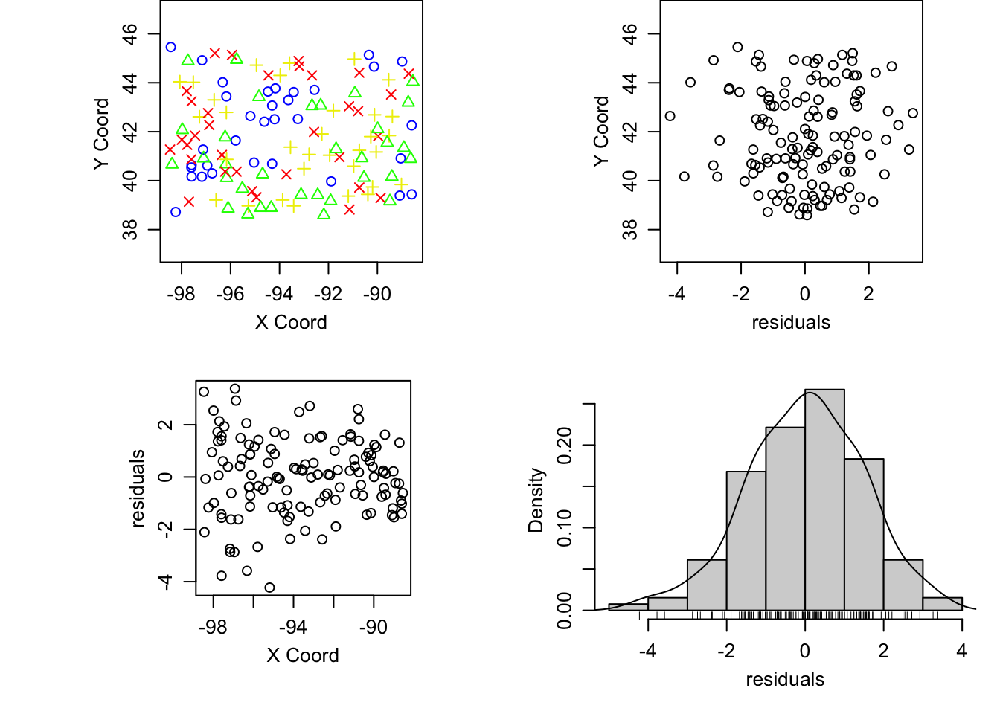
Plot the empirical variogram.
## variog: computing omnidirectional variogram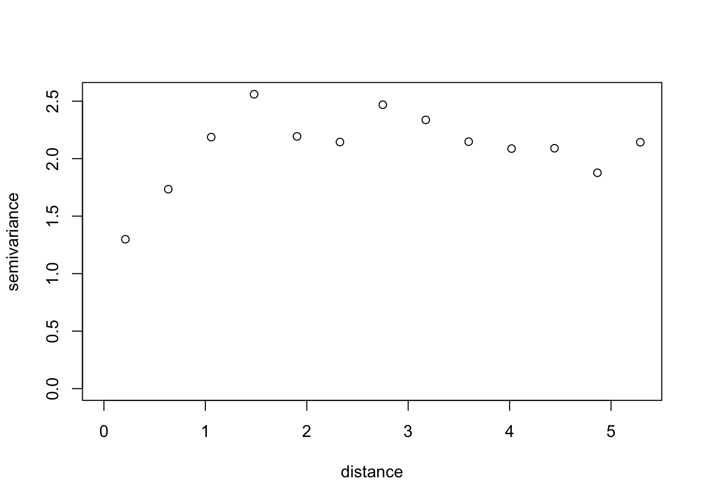
Fit a variogram model.
## kappa not used for the exponential correlation function
## ---------------------------------------------------------------
## likfit: likelihood maximisation using the function optim.
## likfit: Use control() to pass additional
## arguments for the maximisation function.
## For further details see documentation for optim.
## likfit: It is highly advisable to run this function several
## times with different initial values for the parameters.
## likfit: WARNING: This step can be time demanding!
## ---------------------------------------------------------------
## likfit: end of numerical maximisation.## likfit: estimated model parameters:
## beta0 beta1 beta2 beta3 beta4 beta5 tausq
## "599.2532" " 14.8991" " 8.5793" " 0.0811" " -0.1224" " 0.0025" " 0.0000"
## sigmasq phi
## " 2.1140" " 0.4139"
## Practical Range with cor=0.05 for asymptotic range: 1.239937
##
## likfit: maximised log-likelihood = -226.6The beta values refer to the second order trend. The nugget is tausq the partial sill is sigmasq and the range is phi.
## variog: computing omnidirectional variogram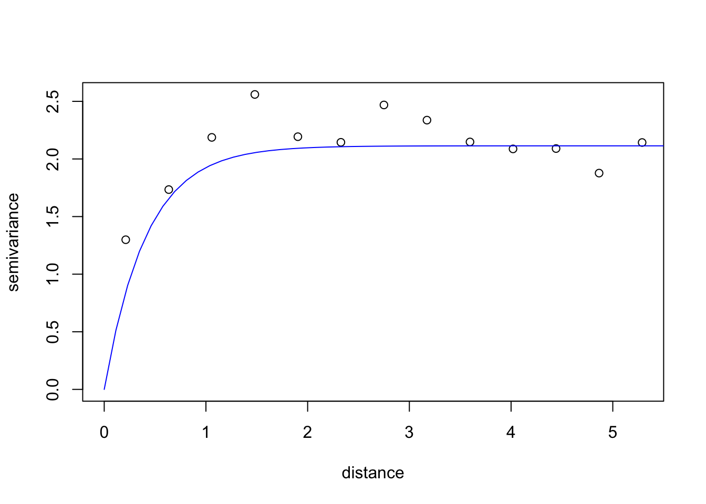
1.3 Example 1: Wolfcamp Aquifer head heights
We’ve been examining piezometric head heights from the Wolfcamp Aquifer. Head heights measurements indicate the potential energy of the water in units of height.
The data are in wolfcamp.csv on my website.
1.3.1 Step 1: Examine the data for trends and isotropy
Convert the data frame to a geodata object. The duplicate measurement is removed with the subset operator when converting from a data.frame to a geodata object.
Plot the residuals after removing the 1st-order trend.
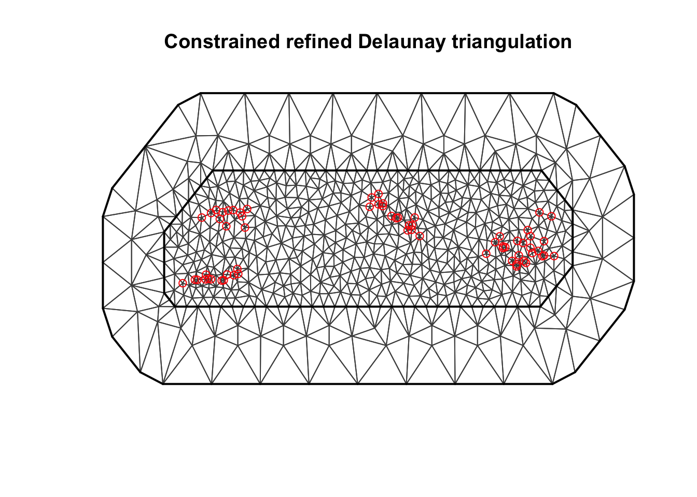
1.3.2 Step 2: Compute empirical variograms
To compute and plot the variogram on the residuals from a 1st-order trend type
## variog: computing omnidirectional variogram
1.3.3 Step 3: Fit a variogram model
Eyeball the initial values for the nugget, partial sill and range. Then use the likfit() function together with the initial estimates to get a variogram model. Here we assign the model to the object wca.vm.
## kappa not used for the spherical correlation function
## ---------------------------------------------------------------
## likfit: likelihood maximisation using the function optim.
## likfit: Use control() to pass additional
## arguments for the maximisation function.
## For further details see documentation for optim.
## likfit: It is highly advisable to run this function several
## times with different initial values for the parameters.
## likfit: WARNING: This step can be time demanding!
## ---------------------------------------------------------------
## likfit: end of numerical maximisation.## likfit: estimated model parameters:
## beta0 beta1 beta2 tausq sigmasq phi
## "-23631.36" " -400.41" " -435.60" " 13194.64" " 34569.94" " 1.14"
## Practical Range with cor=0.05 for asymptotic range: 1.139606
##
## likfit: maximised log-likelihood = -5531.3.4 Step 4: Create the kriged surface
Kriging uses the variogram model and the observed data to estimate data values at any location of interest. The kriged estimates are a weighted average of the neighborhood values where the weights are taken from the variogram model.
Estimates are often made at locations defined on a regular grid.
- First create a grid of locations across the domain. Here we use the
expand.grid()function. The coordinates names of the grid are those defined in thegeodataobject (herelonandlat). Grid spacing is defined by thel =argument in the sequence function.
## lon lat
## 1 -105.0000 33
## 2 -104.9167 33
## 3 -104.8333 33
## 4 -104.7500 33
## 5 -104.6667 33
## 6 -104.5833 33The resulting data frame is a series of locations specified as in a raster starting in the southwest corner. Plot the grid. First convert it to a simple feature data frame. Do the same for the observations.
library(sf)
pgrid.sf <- st_as_sf(x = pgrid.df,
coords = c("lon", "lat"),
crs = "+proj=longlat +datum=WGS84")
wca.sf <- st_as_sf(x = wca.df,
coords = c("lon", "lat"),
crs = "+proj=longlat +datum=WGS84")
library(USAboundaries)
sts <- us_states()
library(tmap)
tm_shape(wca.sf) +
tm_bubbles(size = .25) +
tm_shape(pgrid.sf) +
tm_dots(col = "red")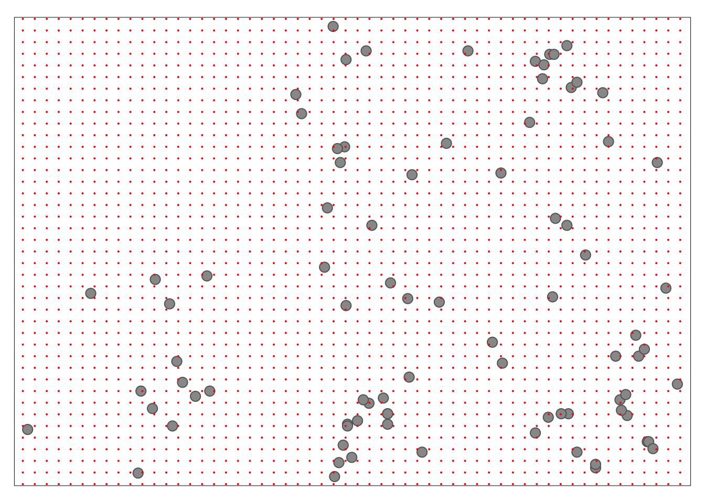
- Next predict the head heights at the grid locations.
The krige.conv() function performs the kriging. Predictions are made at the grid locations using the data and the variogram model (wca.vm). We specify a 1st-order trend in the data (trend.d) and we want the predictions to include the trend (trend.l) so these are included as parameters in the krige.control() function.
wca.ks <- krige.conv(wca.gdf,
loc = pgrid.df,
krige = krige.control(trend.d = "1st",
trend.l = "1st",
obj.m = wca.vm)) ## krige.conv: model with mean given by a 1st order polynomial on the coordinates
## krige.conv: Kriging performed using global neighbourhood## List of 6
## $ predict : num [1:3721] 4033 3998 3964 3930 3899 ...
## $ krige.var : num [1:3721] 67964 66863 65821 64864 63918 ...
## $ beta.est : Named num [1:3] -23631 -400 -436
## ..- attr(*, "names")= chr [1:3] "beta0" "beta1" "beta2"
## $ distribution: chr "normal"
## $ message : chr "krige.conv: Kriging performed using global neighbourhood"
## $ call : language krige.conv(geodata = wca.gdf, locations = pgrid.df, krige = krige.control(trend.d = "1st", trend.l = "1st", | __truncated__
## - attr(*, "sp.dim")= chr "2d"
## - attr(*, "prediction.locations")= symbol pgrid.df
## - attr(*, "parent.env")=<environment: R_GlobalEnv>
## - attr(*, "data.locations")= language wca.gdf$coords
## - attr(*, "class")= chr "kriging"The fitted values (predict) and the uncertainty (krige.var) are output as a vector of length 61 x 61 = 3721. The uncertainty is the standard deviation squared of the predicted value. Kriging performed using global neighborhood.
- Plot the results.
First add the fitted and uncertainty values as columns to the pgrid.df data frame.
Map the predicted values and the uncertainty values using ggplot().
Start with the predicted values. Here we use the geom_raster() function.
library(ggplot2)
ggplot(data = pgrid.df, aes(x = lon, y = lat)) +
geom_raster(aes(fill = height)) +
scale_fill_viridis_c()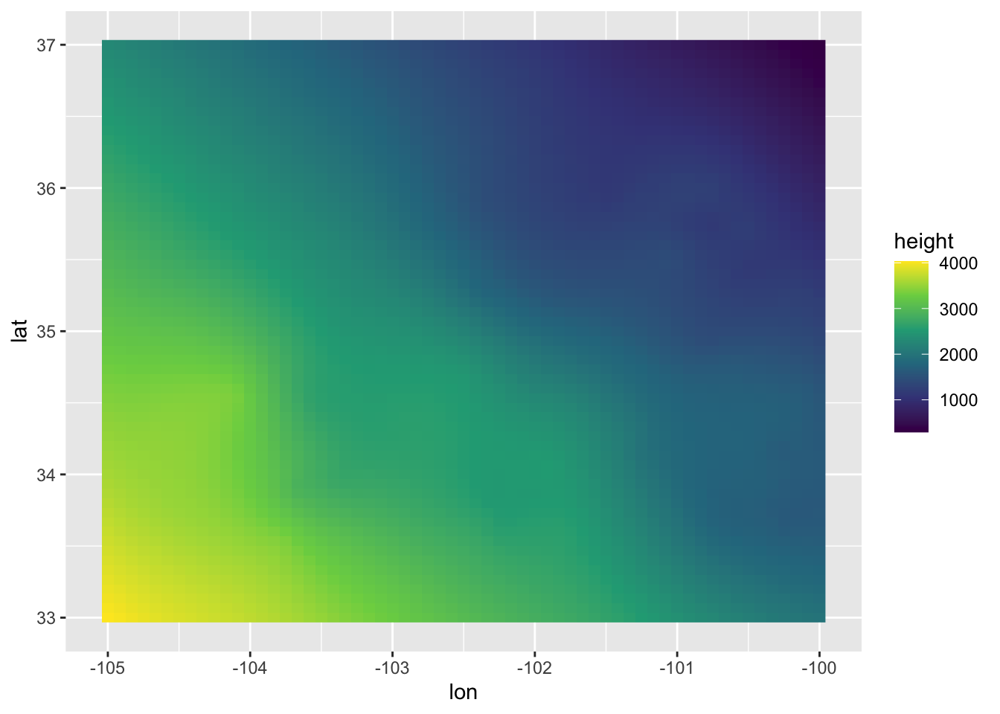
The map shows the predicted values as a combination of the spatial gradient and spatial autocorrelation.
Or use {tmap}. First convert the grid data frame to a spatial pixels data frame (S4 spatial object). Then convert the spatial pixels data frame to a raster.
library(sp)
spdf <- pgrid.df
coordinates(spdf) <- c("lon", "lat")
spdf <- as(spdf, "SpatialPixelsDataFrame")
proj4string(spdf) <- st_crs(wca.sf)$proj4string
library(raster)##
## Attaching package: 'raster'## The following objects are masked from 'package:MASS':
##
## area, select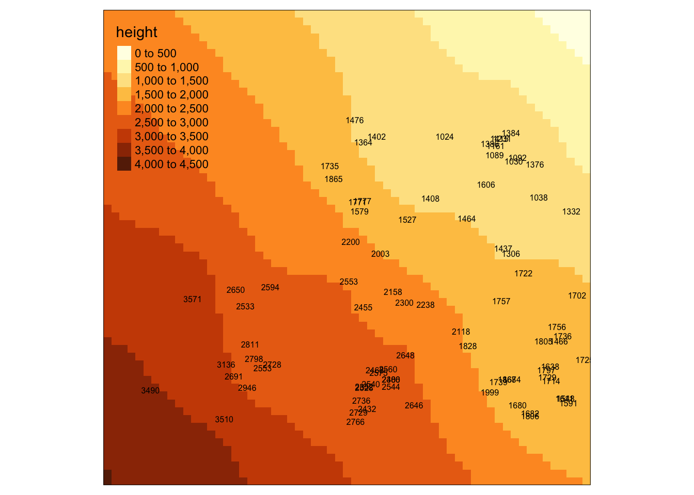
Plot the uncertainty.
ggplot(data = pgrid.df, aes(lon, lat)) +
geom_raster(aes(fill = var)) +
scale_fill_gradient() +
geom_point(data = wca.df, aes(x = lon, y = lat))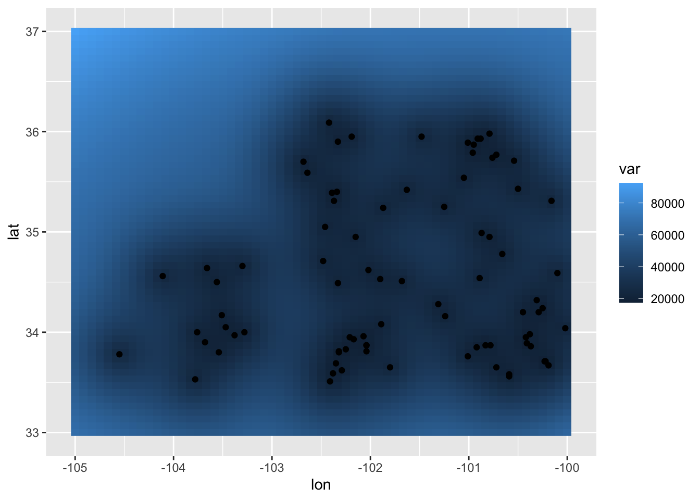
The map shows that the prediction variances are smallest in regions surrounding the observations. This makes sense since what we know about the field comes from the observations.
1.3.5 Step 5: Evaluate the prediction
How do we evaluate how good the interpolated surface is? If we use the variogram model to predict at the observation locations, we will get the observed values back when the nugget is fixed at zero. So this is not helpful. Instead we use cross validation.
Cross validation is a procedure for assessing how well a model will do at predicting values when observations specific to the prediction are removed. The procedure first partitions the data into disjoint subsets. The model is then fit to one subset of the data (training set) and the model is validated on a different subset (testing set).
Leave-one-out cross validation uses all but one observation for fitting and the left-out observation for testing. The procedure is repeated with every observation taking turns in being left out.
K-fold cross validation uses K observations for fitting and N-K for testing. With large K there are many ways to slice the sample so the procedure is not exhaustive like hold-one-out.
With kriging, the data is used in two ways (1) to fit the variogram model, and (2) to interpolate the values. Thus cross validation has two cases: weak and strong. Weak cross validation uses the entire dataset to estimate the variogram model. Then kriging is performed N times using a leave-one-out strategy with the predicted value saved only for the observation left out.
The xvalid() function from the {geoR} package computes the cross-validated prediction error of the Wolfcamp aquifer interpolation in this weak sense.
## xvalid: number of data locations = 84
## xvalid: number of validation locations = 84
## xvalid: performing cross-validation at location ... 1, 2, 3, 4, 5, 6, 7, 8, 9, 10, 11, 12, 13, 14, 15, 16, 17, 18, 19, 20, 21, 22, 23, 24, 25, 26, 27, 28, 29, 30, 31, 32, 33, 34, 35, 36, 37, 38, 39, 40, 41, 42, 43, 44, 45, 46, 47, 48, 49, 50, 51, 52, 53, 54, 55, 56, 57, 58, 59, 60, 61, 62, 63, 64, 65, 66, 67, 68, 69, 70, 71, 72, 73, 74, 75, 76, 77, 78, 79, 80, 81, 82, 83, 84,
## xvalid: end of cross-validationdf <- data.frame(observed = xv.wk$data,
predicted = xv.wk$predicted)
ggplot(df, aes(x = observed, y = predicted)) +
geom_point() +
geom_abline(intercept = 0, slope = 1) +
geom_smooth(method = lm, color = "red") +
ylab("Predicted head heights (ft)") +
xlab("Observed head heights (ft)") +
ggtitle("Weak Cross Validation") +
theme_minimal()## `geom_smooth()` using formula 'y ~ x'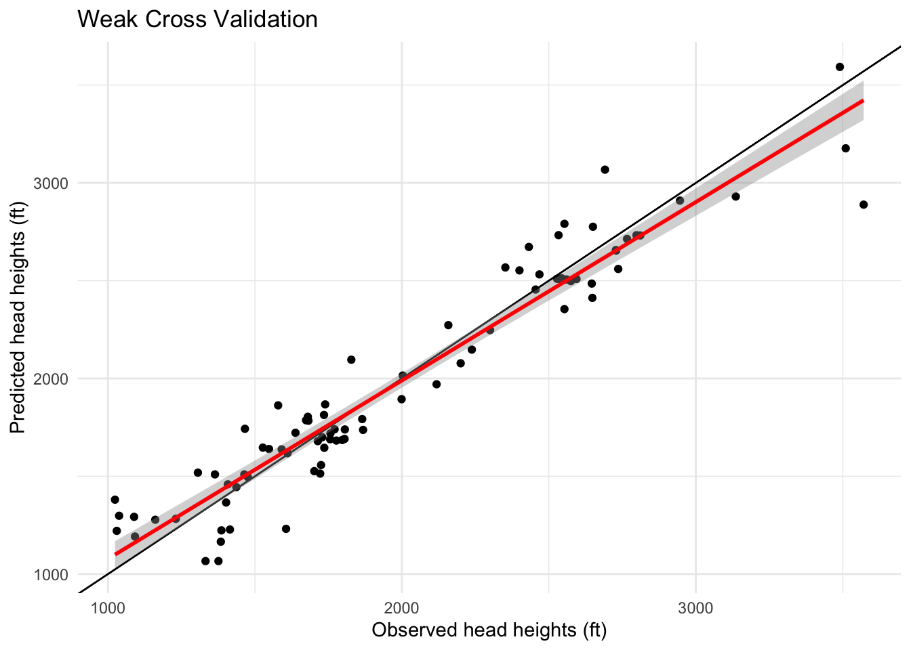
## [1] 30635.95## [1] 136.9617The mean squared cross-validated prediction error is 30636 ft^2 and the mean absolute cross-validated prediction error is 137 ft.
Strong cross validation requires that the variogram be re-estimated each time an observation is removed. The model must be fit using the variofit() function and the call must include the empirical variogram object. This is done with the argument reestimate = TRUE.
## xvalid: number of data locations = 84
## xvalid: number of validation locations = 84
## xvalid: performing cross-validation at location ... 1, 2, 3, 4, 5, 6, 7, 8, 9, 10, 11, 12, 13, 14, 15, 16, 17, 18, 19, 20, 21, 22, 23, 24, 25, 26, 27, 28, 29, 30, 31, 32, 33, 34, 35, 36, 37, 38, 39, 40, 41, 42, 43, 44, 45, 46, 47, 48, 49, 50, 51, 52, 53, 54, 55, 56, 57, 58, 59, 60, 61, 62, 63, 64, 65, 66, 67, 68, 69, 70, 71, 72, 73, 74, 75, 76, 77, 78, 79, 80, 81, 82, 83, 84,
## xvalid: end of cross-validation## [1] 31606.59## [1] 139.0616Strong cross validation will result in an error estimate that is larger than the error estimate from a weak cross validation.
1.4 Example 2: April temperatures in the Midwest
The data in MidwestTemps.txt are average temperatures in and around the state of Iowa for the month of April. The goal is a spatial interpolation of these values onto a 56 by 35 grid.
1.4.1 Step 1: Examine the data for spatial trends and normality
L <- "http://myweb.fsu.edu/jelsner/temp/data/MidwestTemps.txt"
t.df <- read.table(L, header = TRUE)
summary(t.df)## lon lat temp
## Min. :-98.47 Min. :38.59 Min. :41.50
## 1st Qu.:-96.22 1st Qu.:40.22 1st Qu.:47.15
## Median :-93.72 Median :41.55 Median :51.30
## Mean :-93.62 Mean :41.77 Mean :50.61
## 3rd Qu.:-90.77 3rd Qu.:43.36 3rd Qu.:53.85
## Max. :-88.55 Max. :45.46 Max. :58.60Map the values.
t.sf <- st_as_sf(x = t.df,
coords = c("lon", "lat"),
crs = "+proj=longlat +datum=WGS84")
tm_shape(t.sf) +
tm_text(text = "temp", size = .6) +
tm_shape(sts) +
tm_borders() 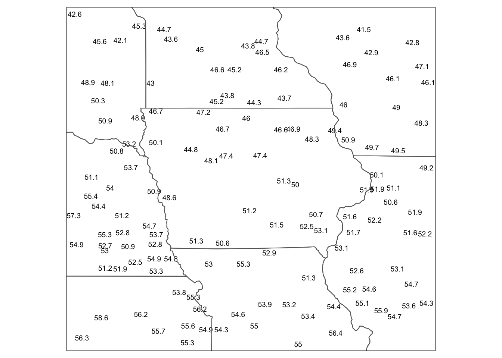
Create a geodata object from the data frame.
## Number of data points: 131
##
## Coordinates summary
## lon lat
## min -98.47 38.59
## max -88.55 45.46
##
## Distance summary
## min max
## 0.1004988 11.5354237
##
## Data summary
## Min. 1st Qu. Median Mean 3rd Qu. Max.
## 41.50000 47.15000 51.30000 50.61298 53.85000 58.60000
The maximum pairwise distance is 11.5 degrees. There is a pronounced 1st order trend in the north/south direction as we might expect with air temperatures.
Remove the trend and examine the residuals.
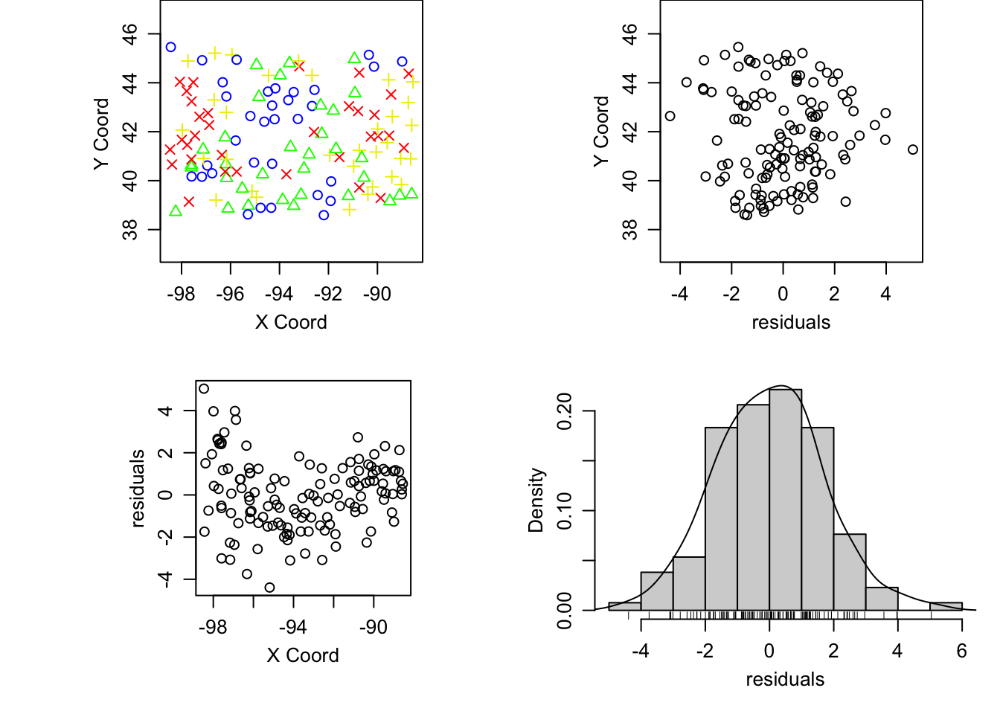
There is some evidence of a 2nd-order trend in the west-east direction.

By specifying a higher order trend, the lower order trends are taken care of. The distribution of residuals is approximately normal as we might expect. The data are monthly means.
1.4.2 Step 2: Compute empirical variograms
Check for anisotropy by plotting directional variograms.
par(mfrow = c(1, 1))
plot(variog4(t.gdf, trend = "2nd",
max.dist = 5.5),
omni = TRUE, legend = FALSE)## variog: computing variogram for direction = 0 degrees (0 radians)
## tolerance angle = 22.5 degrees (0.393 radians)
## variog: computing variogram for direction = 45 degrees (0.785 radians)
## tolerance angle = 22.5 degrees (0.393 radians)
## variog: computing variogram for direction = 90 degrees (1.571 radians)
## tolerance angle = 22.5 degrees (0.393 radians)
## variog: computing variogram for direction = 135 degrees (2.356 radians)
## tolerance angle = 22.5 degrees (0.393 radians)
## variog: computing omnidirectional variogram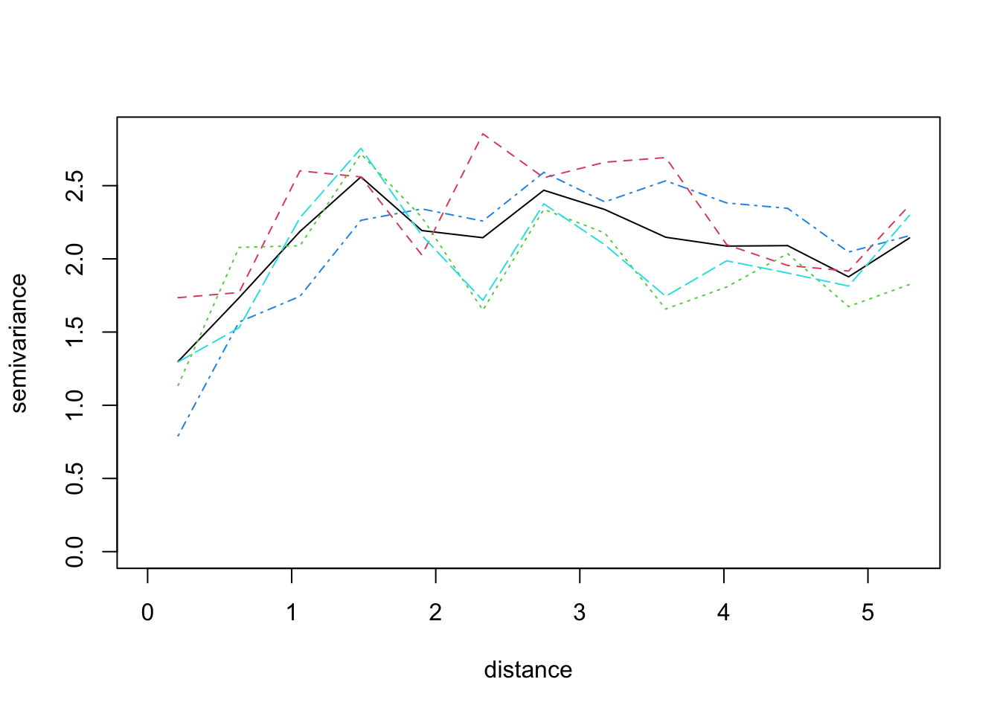
There is no strong evidence to reject isotropy.
1.4.3 Step 3: Fit a variogram model to the data
Here we consider several likelihood fits to an exponential model and examine the AIC for final parameter selection.
The AIC is used as a selection criterion and is a function of the maximized likelihood function but includes a penalty for model complexity that favors simpler models. Recall the best fit has the largest log-likelihood and smallest AIC.
Set initial values for the sill and range. From the variograms start with 3 for the sill and 4 for the range.
iv <- c(3, 4)
summary(likfit(t.gdf,
ini = iv,
cov.model = "exp",
trend = "2nd",
fix.nug = TRUE,
message = FALSE))$likelihood$AIC## [1] 469.2366summary(likfit(t.gdf,
ini = iv,
cov.model = "exp",
trend = "2nd",
fix.nug = FALSE,
message = FALSE))$likelihood$AIC## [1] 471.2366summary(likfit(t.gdf, ini = iv,
cov.model = "sph",
trend = "2nd",
fix.nug = TRUE,
message = FALSE))$likelihood$AIC## [1] 494.8665summary(likfit(t.gdf, ini = iv,
cov.model = "sph",
trend = "2nd",
fix.nug = FALSE,
message = FALSE))$likelihood$AIC## [1] 469.5015It appears that a good variogram model would be on the residuals of a 2nd order trend using an exponential function with fixed nugget equal to zero. A spherical function with a nugget is also a reasonable model.
To obtain the model parameters, type
## kappa not used for the exponential correlation function
## ---------------------------------------------------------------
## likfit: likelihood maximisation using the function optimize.
## likfit: Use control() to pass additional
## arguments for the maximisation function.
## For further details see documentation for optimize.
## likfit: It is highly advisable to run this function several
## times with different initial values for the parameters.
## likfit: WARNING: This step can be time demanding!
## ---------------------------------------------------------------
## likfit: end of numerical maximisation.## likfit: estimated model parameters:
## beta0 beta1 beta2 beta3 beta4 beta5 sigmasq
## "599.2478" " 14.8990" " 8.5793" " 0.0811" " -0.1224" " 0.0025" " 2.1140"
## phi
## " 0.4139"
## Practical Range with cor=0.05 for asymptotic range: 1.239984
##
## likfit: maximised log-likelihood = -226.6## kappa not used for the spherical correlation function
## ---------------------------------------------------------------
## likfit: likelihood maximisation using the function optim.
## likfit: Use control() to pass additional
## arguments for the maximisation function.
## For further details see documentation for optim.
## likfit: It is highly advisable to run this function several
## times with different initial values for the parameters.
## likfit: WARNING: This step can be time demanding!
## ---------------------------------------------------------------
## likfit: end of numerical maximisation.## likfit: estimated model parameters:
## beta0 beta1 beta2 beta3 beta4 beta5 tausq
## "600.7907" " 14.9147" " 8.5701" " 0.0810" " -0.1230" " 0.0020" " 0.5032"
## sigmasq phi
## " 1.6381" " 1.3071"
## Practical Range with cor=0.05 for asymptotic range: 1.307142
##
## likfit: maximised log-likelihood = -225.8Plot the competing models on the empirical variogram.
## variog: computing omnidirectional variogramlines.variomodel(cov.model = "exp",
cov.pars = c(2.114, .4139),
nug = 0, max.dist = 5.5, col = "red")
lines.variomodel(cov.model = "sph",
cov.pars = c(1.638, 1.307),
nug =.5, max.dist = 5.5, col = "green")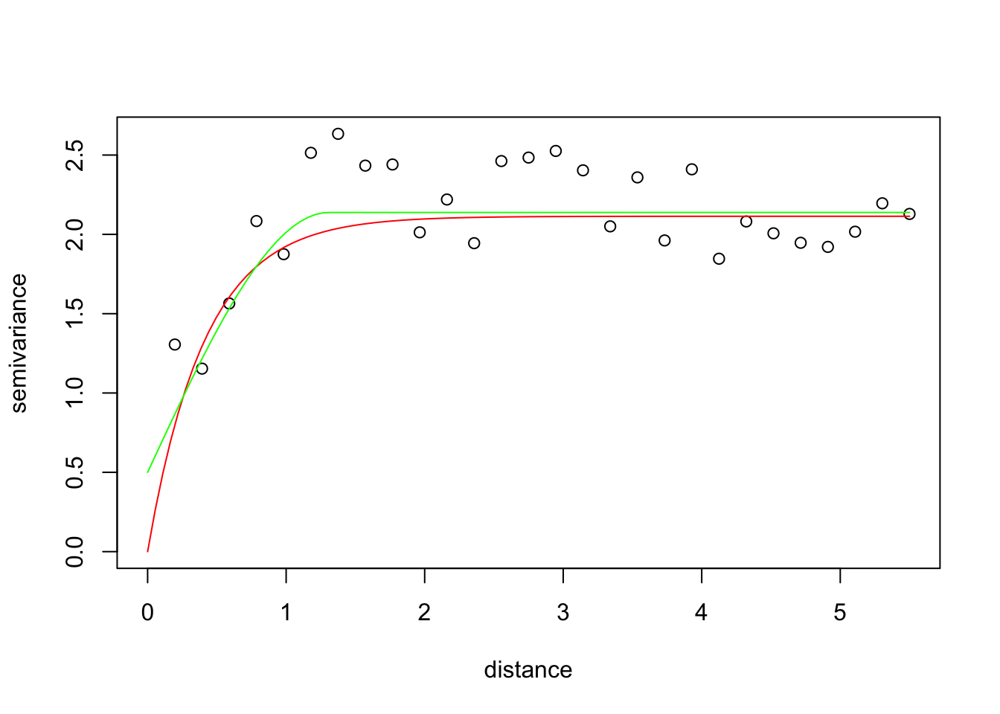
Save the models.
## kappa not used for the exponential correlation function
## ---------------------------------------------------------------
## likfit: likelihood maximisation using the function optimize.
## likfit: Use control() to pass additional
## arguments for the maximisation function.
## For further details see documentation for optimize.
## likfit: It is highly advisable to run this function several
## times with different initial values for the parameters.
## likfit: WARNING: This step can be time demanding!
## ---------------------------------------------------------------
## likfit: end of numerical maximisation.## kappa not used for the spherical correlation function
## ---------------------------------------------------------------
## likfit: likelihood maximisation using the function optim.
## likfit: Use control() to pass additional
## arguments for the maximisation function.
## For further details see documentation for optim.
## likfit: It is highly advisable to run this function several
## times with different initial values for the parameters.
## likfit: WARNING: This step can be time demanding!
## ---------------------------------------------------------------
## likfit: end of numerical maximisation.1.4.4 Step 4: Create an interpolated surface
We create a grid of locations at which we want the temperatures to be interpolated. Here we use the expand.grid function where the arguments are the sequence of longitudes and latitudes, respectively. We then use the krige.conv() function to interpolate the values to the grid. We save the interpolation in kcE when we use the exponential variogram model to weight the observations and save the interpolation in kcS when we use the spherical model to weight the observations.
pgrid.df<- expand.grid(lon = seq(-99, -88, l = 224),
lat = seq(38.4, 45.4, l = 136))
kcE <- krige.conv(t.gdf,
loc = pgrid.df,
krige = krige.control(trend.d = "2nd",
trend.l = "2nd",
obj.m = modelE))## krige.conv: model with mean given by a 2nd order polynomial on the coordinates
## krige.conv: Kriging performed using global neighbourhoodkcS <- krige.conv(t.gdf,
loc = pgrid.df,
krige = krige.control(trend.d = "2nd",
trend.l = "2nd",
obj.m = modelS))## krige.conv: model with mean given by a 2nd order polynomial on the coordinates
## krige.conv: Kriging performed using global neighbourhoodPlot the interpolated surface generated using the exponential variogram. function.
pgrid.df$temp <- kcE$predict
pgrid.df$var <- kcE$krige.var
spdf <- pgrid.df
coordinates(spdf) <- c("lon", "lat")
spdf <- as(spdf, "SpatialPixelsDataFrame")
proj4string(spdf) <- st_crs(t.sf)$proj4string
library(raster)
r <- raster(spdf)
tm_shape(r) +
tm_raster(n = 9, palette = "OrRd") +
tm_shape(sts) +
tm_borders() +
tm_shape(t.sf) +
tm_text("temp", size = .5)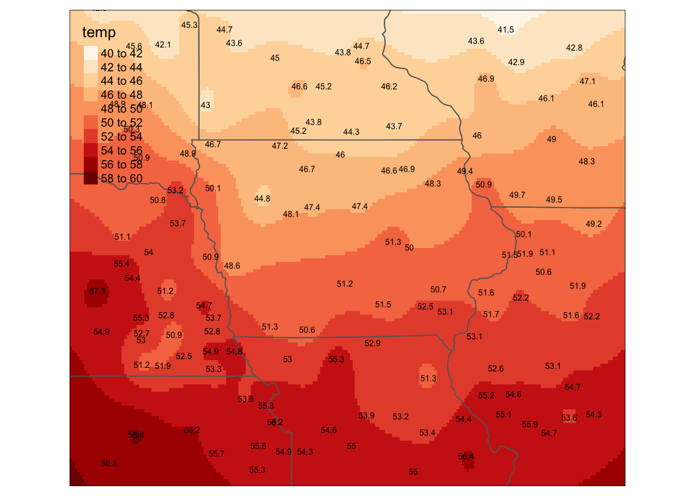
Plot the interpolated surface generated using the spherical variogram.
pgrid.df$temp <- kcS$predict
pgrid.df$var <- kcS$krige.var
spdf <- pgrid.df
coordinates(spdf) <- c("lon", "lat")
spdf <- as(spdf, "SpatialPixelsDataFrame")
proj4string(spdf) <- st_crs(t.sf)$proj4string
library(raster)
r <- raster(spdf)
tm_shape(r) +
tm_raster(n = 9, palette = "OrRd") +
tm_shape(sts) +
tm_borders() +
tm_shape(t.sf) +
tm_text("temp", size = .5)The model with a non-zero nugget is smoother. The greater the nugget relative to the sill (relative nugget effect), the smoother the interpolation.
1.5 Synthetic data
Synthetic data are useful as input to a deterministic model. An example is rainfall as input to spatially-distributed rainfall-runoff model. Interpolated values of precipitation and their variances might be of little value, but running the rainfall-runoff model with a large number of simulated rainfall fields can give a realistic assessment of the uncertainty in runoff arising from the variability in the rainfall.
The grf() function in the {geoR} package generates synthetic data from Gaussian random fields on regular or irregular sets of locations. For example, to generate 100 randomly spaced points with values at the points being a sample from a Gaussian random field with an exponential variogram (default with zero nugget) having a sill of 1 and a range of .25, type
## grf: simulation(s) on randomly chosen locations with 100 points
## grf: process with 1 covariance structure(s)
## grf: nugget effect is: tausq= 0
## grf: covariance model 1 is: exponential(sigmasq=1, phi=0.25)
## grf: decomposition algorithm used is: cholesky
## grf: End of simulation procedure. Number of realizations: 1Plot the points and the variograms.
layout(matrix(c(1, 2), byrow = TRUE, ncol = 2),
respect = TRUE)
points.geodata(sim1,
main = "simulated locations and values")
plot(sim1, max.dist = .5,
main = "true and empirical variograms")## variog: computing omnidirectional variogram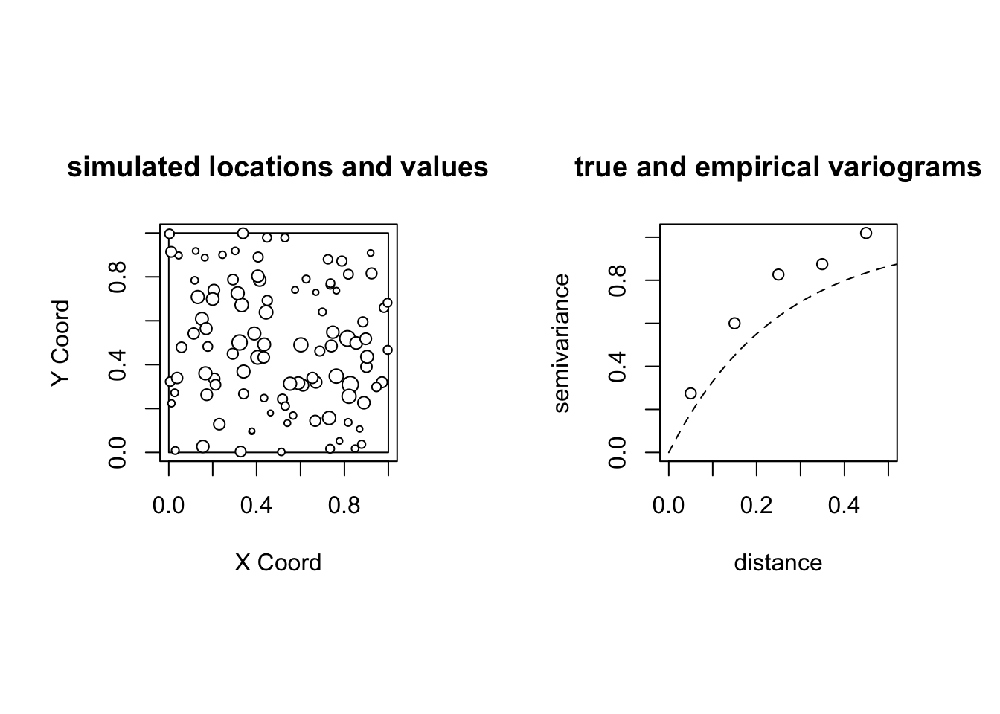
The random fields can be put on a regular grid.
## grf: generating grid 21 * 21 with 441 points
## grf: process with 1 covariance structure(s)
## grf: nugget effect is: tausq= 0
## grf: covariance model 1 is: exponential(sigmasq=1, phi=0.25)
## grf: decomposition algorithm used is: cholesky
## grf: End of simulation procedure. Number of realizations: 1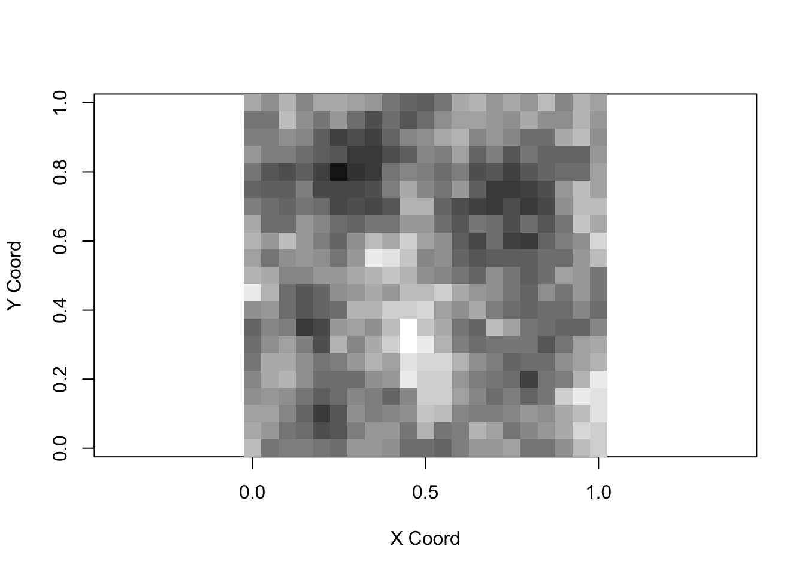
## grf: generating grid 67 * 67 with 4489 points
## grf: process with 1 covariance structure(s)
## grf: nugget effect is: tausq= 0
## grf: covariance model 1 is: exponential(sigmasq=1, phi=0.25)
## grf: simulation using the function GaussRF from package RandomFields
## grf: End of simulation procedure. Number of realizations: 1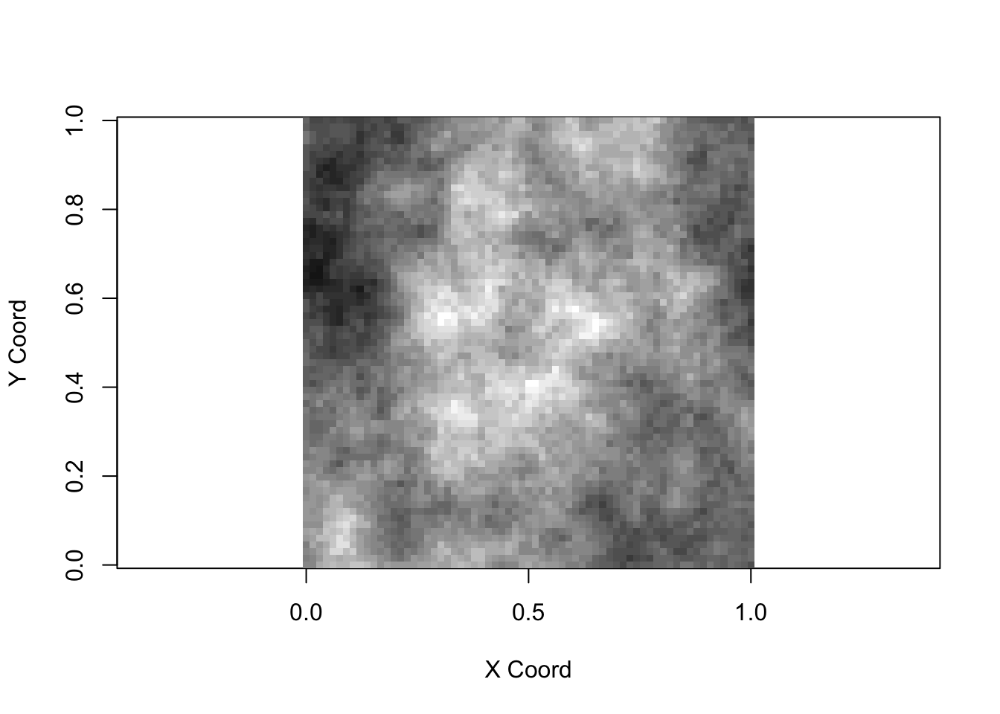
For an even higher resolution simulation it is necessary to have the {RandomFields} package.
1.6 Challenge problem
Consider the data set parana from the {geoR} package containing rainfall values from the state of Paran`a. The data are average rainfall (mm) over the period May-June.
- Plot the values. Plot the residuals after a 1st order trend is removed.
- Compute and plot an empirical variogram on the residuals after removing the 1st-order trend. Check for anisotropy.
- Fit a variogram model from the gaussian family to the empirical variogram. Assume isotropy. Set the initial values of the nugget to 500, the partial sill to 800 and the range to 100. Plot the modeled variogram on top of the empirical variogram.
- Create a kriged surface by interpolating the rainfall values to locations on a regular grid. Use the
pred_grid(parana$borders, by = 2)function to generate the grid. - Plot the interpolated surface. Note this can be done with the
image()function. Usecol = rev(terrain.colors(21)). - Compute the cross-validated prediction errors assuming a constant variogram model. Plot the observed versus predicted values as a scatter plot. Include the best fit line and the y = x line.
1.7 Spatial interpolation using the functions in the {gstat} package
“Commenting your code is like cleaning your bathroom - you never want to do it, but it really does create a more pleasant experience for you and your guests.” — Ryan Cambell
We start with the Meuse river data from Burrough and McDonnell (1998). The data are part of {gstat}.
## x y cadmium copper lead zinc elev dist om ffreq soil lime
## 1 181072 333611 11.7 85 299 1022 7.909 0.00135803 13.6 1 1 1
## 2 181025 333558 8.6 81 277 1141 6.983 0.01222430 14.0 1 1 1
## 3 181165 333537 6.5 68 199 640 7.800 0.10302900 13.0 1 1 1
## 4 181298 333484 2.6 81 116 257 7.655 0.19009400 8.0 1 2 0
## 5 181307 333330 2.8 48 117 269 7.480 0.27709000 8.7 1 2 0
## 6 181390 333260 3.0 61 137 281 7.791 0.36406700 7.8 1 2 0
## landuse dist.m
## 1 Ah 50
## 2 Ah 30
## 3 Ah 150
## 4 Ga 270
## 5 Ah 380
## 6 Ga 470The data are topsoil heavy metal concentrations along with a number of soil and landscape variables at locations in a flood plain of the river Meuse near the town of Stein (NL).
Heavy metal concentrations are composite samples of an area of approximately 15 m x 15 m. The dataset also gives local elevation (m) above local river bed and distance to river normalized to a value between 0 and 1.
Create a spatial points data frame (S4 class) and map the concentration of zinc in the soil on a log scale as a bubble plot.
## [1] "SpatialPointsDataFrame"
## attr(,"package")
## [1] "sp"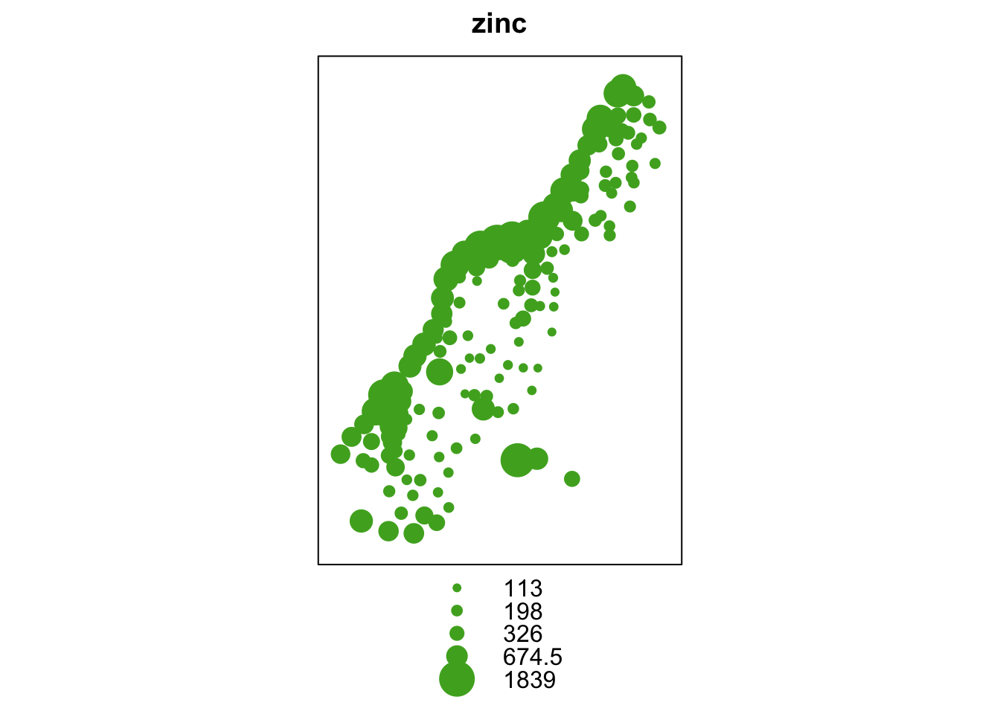
Zinc in the soil is concentrated along the east bank of the Meuse river.
1.7.1 Inverse distance weighted interpolation
We begin by creating an interpolated surface with the method of inverse distance weighting (IDW). Here the average of the observed values for any location is weighted inversely based on how far the observation points are from the location of interest. An exponent on the weights matrix determines the degree to which nearer observations are weighted more than more distant ones.
A regular grid where the interpolated values of zinc are made is given in the data frame meuse.grid.
## x y part.a part.b dist soil ffreq
## 1 181180 333740 1 0 0.0000000 1 1
## 2 181140 333700 1 0 0.0000000 1 1
## 3 181180 333700 1 0 0.0122243 1 1
## 4 181220 333700 1 0 0.0434678 1 1
## 5 181100 333660 1 0 0.0000000 1 1
## 6 181140 333660 1 0 0.0122243 1 1Convert the grid as a data frame to a spatial pixels data frame. Note this is done first by converting the data frame to spatial points then to spatial pixels.
coordinates(meuse.grid) <- ~ x + y
proj4string(meuse.grid) <- CRS("+init=epsg:28992")
meuse.grid2 <- as(meuse.grid, "SpatialPixelsDataFrame")
head(meuse.grid2)## part.a part.b dist soil ffreq
## 1 1 0 0.0000000 1 1
## 2 1 0 0.0000000 1 1
## 3 1 0 0.0122243 1 1
## 4 1 0 0.0434678 1 1
## 5 1 0 0.0000000 1 1
## 6 1 0 0.0122243 1 1As mentioned last time, the above conversion works since the locations have a spatial ordering. It will not work for a data frame with an arbitrary ordering of locations.
Here we plot the pixel locations using the attribute dist indicating distance to the river.
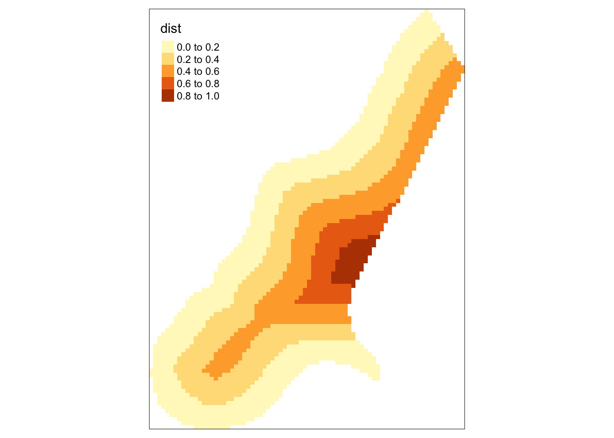
Interpolate the zinc values to the pixel locations using IDW. The idp = argument is the exponent on the weights. The larger the exponent, the more variation there is in the interpolated values.
## [inverse distance weighted interpolation]## Formal class 'SpatialPixelsDataFrame' [package "sp"] with 7 slots
## ..@ data :'data.frame': 3103 obs. of 2 variables:
## .. ..$ var1.pred: num [1:3103] 702 800 724 655 942 ...
## .. ..$ var1.var : num [1:3103] NA NA NA NA NA NA NA NA NA NA ...
## ..@ coords.nrs : int [1:2] 1 2
## ..@ grid :Formal class 'GridTopology' [package "sp"] with 3 slots
## ..@ grid.index : int [1:3103] 69 146 147 148 223 224 225 226 300 301 ...
## ..@ coords : num [1:3103, 1:2] 181180 181140 181180 181220 181100 ...
## .. ..- attr(*, "dimnames")=List of 2
## ..@ bbox : num [1:2, 1:2] 178440 329600 181560 333760
## .. ..- attr(*, "dimnames")=List of 2
## ..@ proj4string:Formal class 'CRS' [package "sp"] with 1 slotNote the formula. Here zinc ~ 1, where zinc is the field variable that is to be interpolated and 1 indicates a IDW interpolation (no autocorrelation and no trend or covariates).
The saved object (zinc.idw) inherits the class of the interpolation grid (here SpatialPixelDataFrame). The interpolated values are saved in the data frame slot with variable name var1.pred. The other variable is var1.var which is an estimate of the interpolation errors. With IDW they are NA.
IDW results in a surface that is often similar to a kriged surface. But interpolations may show undesired effects if the observation locations have a non-uniform distribution.
Map the results. Start with an image plot, then add a bubble plot of the observed concentrations and a legend. Here the size of the point character (circle) is set by the cex = argument.
IDW tends to generate ‘bulls-eye’ patterns.
The spatial class makes it easier to create maps and export them to different platforms.
1.7.2 Create a geoTIF file that can be read into ENVI or ArcMap.
Here you repeat the analysis but this time use a planar projection for the interpolation grid, interpolate the logarithm of the zinc, and create a geoTIF file for output.
Again make meuse.grid a spatial pixels data frame.
data(meuse.grid)
coordinates(meuse.grid) <- ~ x + y
gridded(meuse.grid) <- TRUE
proj4string(meuse.grid) <- CRS(paste("+init=epsg:28992",
"+towgs84=565.237,50.0087,465.658,-0.406857,0.350733,-1.87035,4.0812"))Make meuse a spatial points data frame with the same projection.
Use the krige function in the {gstat} package and perform inverse-distance predictions. Since no variogram is specified in the function, the method defaults to inverse-distance weighting.
## [inverse distance weighted interpolation]## Object of class SpatialPixelsDataFrame
## Coordinates:
## min max
## x 178440 181560
## y 329600 333760
## Is projected: TRUE
## proj4string :
## [+init=epsg:28992
## +towgs84=565.237,50.0087,465.658,-0.406857,0.350733,-1.87035,4.0812
## +proj=sterea +lat_0=52.15616055555555 +lon_0=5.38763888888889
## +k=0.9999079 +x_0=155000 +y_0=463000 +ellps=bessel +units=m +no_defs]
## Number of points: 3103
## Grid attributes:
## cellcentre.offset cellsize cells.dim
## x 178460 40 78
## y 329620 40 104
## Data attributes:
## var1.pred
## Min. :4.791
## 1st Qu.:5.484
## Median :5.694
## Mean :5.777
## 3rd Qu.:6.041
## Max. :7.4821.7.3 Create a KML file that can be read by Google Earth
We export a colored raster of interpolated log zinc ppm values to a PNG file with an alpha channel for viewing it in Google Earth. Since GE requires geographical coordinates, a number of steps are needed.
First we make a polygon to bound the study area and project it to geographical coordinates.
## Checking rgeos availability: TRUEgrd <- as(meuse.grid, "SpatialPolygons")
proj4string(grd) <- CRS(proj4string(meuse.grid))
grd.union <- unionSpatialPolygons(grd, rep("x", length(slot(grd, "polygons"))))
ll <- CRS("+proj=longlat +datum=WGS84")
grd.union.ll <- spTransform(grd.union, ll)
plot(grd.union.ll, axes = TRUE) 
The result is a single polygon as the union of all polygons in grd in geographic coordinates. Next, we construct a grid in geographical coordinates as our target object for export using the GE_SpatialGrid function. This grid is the container for the output PNG graphics file. GE_SpatialGrid returns values that will be used in setting up the PNG graphics device.
We use the over() method to set grid cells outside the river bank area to NA and then discard them by coercion.
llGRD <- GE_SpatialGrid(grd.union.ll)
llGRD_in <- over(llGRD$SG, grd.union.ll)
llSGDF <- SpatialGridDataFrame(grid = slot(llGRD$SG, "grid"),
proj4string = CRS(proj4string(llGRD$SG)),
data = data.frame(in0 = llGRD_in))
llSPix <- as(llSGDF, "SpatialPixelsDataFrame")Next we interpolate. Here again we use the idw function to make an inverse-distance weighted interpolation of zinc values in ppm.
meuse_ll <- spTransform(meuse,
CRS("+proj=longlat +datum=WGS84"))
llSPix$pred <- idw(log(zinc) ~ 1,
meuse_ll,
llSPix)$var1.pred## [inverse distance weighted interpolation]
Since GE_SpatialGrid was set to the size of an PNG graphics device, we can use it with the image() function. Other base graphics methods and functions can be used to create an image overlay. First open the graphics device, then set the plotting margins, then use image, and finally turn off the device.
png(file <- "zincIDW.png", width = llGRD$width,
height = llGRD$height, bg = "transparent")
par(mar = c(0, 0, 0, 0), xaxs = "i", yaxs = "i")
image(llSPix, "pred", col = bpy.colors(20))
dev.off()## quartz_off_screen
## 2After closing the graphics device, we use the kmlOverlay to write the interpolated grid to a KML file giving the location of the overlay. This will load the image at the position when opened in Google Earth.
## [1] "<?xml version='1.0' encoding='UTF-8'?>"
## [2] "<kml xmlns='http://earth.google.com/kml/2.0'>"
## [3] "<GroundOverlay>"
## [4] "<name>R image</name>"
## [5] "<Icon><href>zincIDW.png</href><viewBoundScale>0.75</viewBoundScale></Icon>"
## [6] "<LatLonBox><north>50.9928974316667</north><south>50.955589349424</south><east>5.76545832043532</east><west>5.72082313681635</west></LatLonBox>"
## [7] "</GroundOverlay></kml>"Open the zincIDW.kml file in Google Earth.
1.7.4 Distance to river as a covariate
Here you use distance to river as a covariate. It is a trend model for the spatial variability of zinc using a covariate defined by the square root of the distance to river. This is not kriging since no variogram model is used.
## [ordinary or weighted least squares prediction]Note that the spacing in colors is not linear.
1.7.5 Empirical variogram analysis
The variogram() function from {gstat} computes the empirical variogram. Here the trend is not in the cardinal directions but rather in distance to the river. The variogram is on the residuals from this trend.
The default cutoff lag (cutoff) and lag tolerance (width) can be changed. For example, type
plot(variogram(log(zinc) ~ sqrt(dist),
data = meuse,
cutoff = 1000,
width = 50),
xlab = "Lag Distance (m)")For comparison, plot a variogram of residuals after removing a 1st-order trend in direction.
plot(variogram(log(zinc) ~ x + y,
data = meuse,
cutoff = 1000,
width = 50),
xlab = "Lag Distance (m)")Directional variograms are estimated by adding the argument alpha.
plot(variogram(log(zinc) ~ x + y,
data = meuse,
cutoff = 1000,
width = 50,
alpha = c(0, 45, 90, 135)),
xlab = "Lag Distance (m)")The variogram in the sw-ne direction appears to be different. And there appears to be very little spatial autocorrelation in the n-s direction. This is partly due to the anistropy of the domain.
1.7.6 Variogram maps
Another way of looking at directional dependence in semivariograms is with variogram maps. Instead of classifying point pairs \(Z(s)\) and \(Z(s + h)\) by direction and distance separately, they are classified jointly.
If \(h = (x, y)\) is the two-dimensional coordinates of the separation vector, in the variogram map the semivariance contribution of each point pair \((Z(s) - Z(s + h))^2\) is attributed to the grid cell in which \(h\) lies. The map is centered at (0, 0), as \(h\) is geographical distance rather than geographical location.
Cutoff and width correspond to map extent and cell size; the semivariance map is point symmetric around (0, 0), as \(\gamma(h) = \gamma(-h)\).
The variogram map is obtained with the map = TRUE argument. The threshold assures that only semivariogram map values based on at least 5 point pairs are shown, removing too noisy estimation.
meuse.vmap <- variogram(log(zinc) ~ x + y,
data = meuse,
cutoff = 1500,
width = 100,
map = TRUE)
plot(meuse.vmap, threshold = 5)The symmetry about the dx, dy = (0, 0) is apparent. The variances range from 0 to 2.5 and appear to elongate along the long axis of the domain.
Compare with a variogram map when the square root of the distance to river is used as a covariate.
meuse.vmap <- variogram(log(zinc) ~ sqrt(dist),
data = meuse,
cutoff = 1500,
width = 100,
map = TRUE)
plot(meuse.vmap, threshold = 5)The variances range from 0 to .8 and the directional dependence is much less obvious in this case.
1.7.7 Variogram modeling
A plot of the model families is available with the show.vgms() function.

We’ve seen the exponential (Exp), spherical (Sph), and Gaussian (Gau) families when working with the functions in the {geoR} package.
After choosing a family starting values are needed in the fit.variogram() function. The function calls the vgm() function that includes initial guesses for the partial sill (psill), the range (range), and the nugget (nugget) and uses a weighted least squares method.
meuse.vm <- fit.variogram(meuse.v,
vgm(model = "Sph",
psill = .15,
range = 800,
nugget = .1))
meuse.vm## model psill range
## 1 Nug 0.07981564 0.0000
## 2 Sph 0.14905557 872.6622The output includes a 2 x 2 table with the first row giving information about the nugget and the second giving information about the rest of the model. Here the nugget is .08. By definition the range is zero. The partial sill is .15 with a range of 872.7 m. Plot the sample variogram and the variogram model.
The fit.variogram function refines the initial estimates given in the vgm function. If our initial choice is poor the fit may not work. For example try
## Warning in fit.variogram(meuse.v, vgm(model = "Sph", psill = 1, range = 10, :
## singular model in variogram fit## model psill range
## 1 Nug 1 0
## 2 Sph 1 10An argument for visual fitting over numerical fitting is when you have knowledge that goes beyond the information in the data. Information may come from other studies or derived from measurement error characteristics for a specific measuring device (nugget effect).
1.7.8 Kriging
Simple kriging is done when there is no trend and the mean height of the surface is provided. Because you know the mean exactly you also know the residuals exactly at the data locations. If you know the residuals exactly then you can do a better job of estimating the autocorrelation function (variogram). For ordinary kriging you estimate the mean so the residuals are also estimates.
Universal kriging is done when there is a trend. With universal kriging both the trend and spatial variability are estimated in tandem.
Here we apply kriging to the logarithm of the zinc concentration using the fitted variogram model.
lz.sk <- krige(formula = log(zinc) ~ 1,
locations = meuse,
newdata = meuse.grid,
model = meuse.vm,
beta = 5.9)## [using simple kriging]## [using ordinary kriging]lz.uk <- krige(formula = log(zinc) ~ sqrt(dist),
locations = meuse,
newdata = meuse.grid,
model = meuse.vm)## [using universal kriging]m1 <- tm_shape(lz.sk) +
tm_raster("var1.pred", title = "Simple")
m2 <- tm_shape(lz.ok) +
tm_raster("var1.pred", title = "Ordinary")
m3 <- tm_shape(lz.uk) +
tm_raster("var1.pred", title = "Universal")
tmap_arrange(m1, m2, m3, ncol = 3)
Simple and ordinary kriging treat all spatial variation as autocorrelation. Universal kriging lets some of the variation be due to trend and covariates.
Predictive skill.
1.8 Example: Tropical cyclone rainfall
In 2008, Tropical Cyclone Fay formed from a tropical wave near the Dominican Republic, passed over the island of Hispaniola, Cuba, and the Florida Keys, then crossed the Florida peninsula and moved westward across portions of the panhandle producing heavy rains in parts of the state.
Storm total rainfall amounts from stations in and around the state are in FayRain.txt. They are a compilation of reports from the U.S. NOAA/NWS official weather sites and coop sites.
The coop sites are the Community Collaborative Rain, Hail and Snow Network (CoCoRaHS), a community-based, high density precipitation network made up of volunteers who take measurements of precipitation in their backyards. The data were obtained from NOAA/NCEP/HPC and from the Florida Climate Center.
Load the data.
L <- "http://myweb.fsu.edu/jelsner/temp/data/FayRain.txt"
FR.df <- read.table(L, header = TRUE)
names(FR.df)## [1] "lon" "lat" "tpi" "tpm"The data frame contains 803 rainfall sites. Longitude and latitude coordinates of the sites are given in the first two columns and total rainfall in inches and millimeters are given in the second two columns. Create a spatial points data frame by specifying columns that contain the spatial coordinates. Then assign a geographic coordinate system and convert the rainfall from millimeters to centimeters.
library(sf)
FR.sf <- st_as_sf(x = FR.df,
coords = c("lon", "lat"),
crs = 4326)
FR.sf$tpm <- FR.sf$tpm/10
summary(FR.sf$tpm)## Min. 1st Qu. Median Mean 3rd Qu. Max.
## 0.000 8.306 15.799 17.631 24.372 60.223The median value is 15.8 cm and the maximum is 60.2 cm.
Next get the Florida county boundaries from the {USAboundaries} package.
Next we create a character string specifying the tags for a planar projection and transform the geographic coordinates of the site locations and map polygons to the projected coordinates. Here we use Florida GDL Albers (EPSG:3087) with meter as the distance unit.
A map of the rainfall sites and storm totals with the state boundaries is made by typing
Two areas of heavy rainfall are noted. One running north-south along the east coast and another across the north. Rainfall collection sites are clustered in and around cities. This will make it difficult to use a spline interpolation.
1.8.1 Empirical variogram
Rainfall is an example of geostatistical data. In principle it can be measured anywhere, but typically we have values at a sample of sites. The pattern of observation sites is not of much interest as it is a consequence of constraints (convenience, opportunity, economics, etc) unrelated to the phenomenon. Interest centers on inference about how much rain fell across the region.
The empirical variogram is computed using the variogram() function. The first argument is the model formula specifying the rainfall column from the data frame and the second argument is the data frame name. Here ~ 1 in the model formula indicates no covariates or trends in the data. Trends can be included by specifying coordinate names through the st_coordinates() function.
We compute the empirical variogram for Fay’s rainfall and save it by typing
We plot the variogram values as a function of lag distance and add text indicating the number of point pairs for each lag distance.
library(ggplot2)
v.df <- data.frame(dist = FR.v$dist/1000,
gamma = FR.v$gamma,
np = FR.v$np)
( pv <- ggplot(v.df, aes(x = dist, y = gamma)) +
geom_point() +
geom_text(aes(label = np), nudge_y = -5) +
scale_y_continuous(limits = c(0, 220)) +
scale_x_continuous(limits = c(0, 400)) +
xlab("Lagged distance (h) [km]") +
ylab(expression(paste("Semivariance (", gamma, ") [", cm^2, "]"))) +
theme_minimal() )Values start low (~50 cm\(^2\)) at short lag distance, then increase to over 200 cm\(^2\) at lag distance of about 200 km.
The zero-lag semivariance is called the ‘nugget’ and the semivariance at a level where the variogram values no longer increase is called the ‘sill.’ The lag distance to the sill is called the ‘range.’ These three parameters (nugget, sill, and range) are used to fit a model to the variogram.
1.8.2 Variogram model
Next we fit a model to the empirical variogram. The variogram model is a mathematical relationship defining the semivariance as a function of lag distance. We first save the family and the initial parameter guesses in a variogram model (FR.vmi) object by typing
## model psill range
## 1 Nug 50 0e+00
## 2 Gau 150 2e+05The psill argument is the partial sill as the difference between the sill and the nugget. We get estimates of the parameter values from looking at the empirical variogram.
Next we use the fit.variogram() function to improve the fit. Given a set of initial parameter values, the method of weighted least squares improves the parameter estimates. Ordinary least squares is not appropriate as the semivariances are correlated across the lag distances and the precision on the estimates varies depending on the number of site pairs for a given lag.
## model psill range
## 1 Nug 46.85311 0.0
## 2 Gau 157.15822 128799.1The result is a variogram model with a nugget of 46.8 cm\(^2\), a partial sill of 157 cm\(^2\), and a range on the sill of 129 km.
Let \(r\) be the range, \(c\) the partial sill and \(c_o\) the nugget, then the equation defining the curve over the set of lag distances \(h\) is \[ \gamma(h)=c\left(1-\exp\left(-\frac{h^2}{r^2}\right)\right)+c_o \]
We create a data frame with values of h and gamma using this equation.
nug <- FR.vm$psill[1]
ps <- FR.vm$psill[2]
r <- FR.vm$range[2] / 1000
h <- seq(0, 400, .2)
gamma <- ps * (1 - exp(-h^2 / (r^2))) + nug
vm.df <- data.frame(dist = h,
gamma = gamma)
pv + geom_line(aes(x = dist, y = gamma), data = vm.df)Check for anisotropy.
We see the range of correlations is longer (about 300 km) in the north-south direction (0 degrees). We refit the variogram defining an anistropy ellipse with the anis = argument. The first parameter is the direction of longest range and the second parameter is the ratio of the longest to shortest. Here about (200/300 = .67).
1.8.3 Kriging
The final step is to use the variogram model together with the rainfall values at the observation sites to create an interpolated surface. The process is called kriging. As Edzer Pebesma notes, ‘krige’ is to ‘kriging’ as ‘predict’ is to ‘predicting.’ Here we use ordinary kriging as there are no spatial trends in the rainfall.
Interpolation is done using the krige() function. The first argument is the model specification and the second is the data. Two other arguments are needed. One is the variogram model using the argument name model and the other is a set of locations identifying where the interpolations are to be made. This is specified with the argument name newdata =.
1.8.3.1 Interpolate to point loctions
Here we interpolate to locations on a regular grid. We create a grid of locations within the boundary of Florida using the st_sample() function.
We specify the number of locations using the argument size =. Note that the actual number of locations will be somewhat different because of the irregular boundary.
First we use the krige() function to interpolate the observed rainfall to the grid locations. Recall that for a given location, the interpolation is a weighted average of the rainfall across the entire region where the weights are determined by the variogram model.
## [using ordinary kriging]If the variogram model is not included then inverse distance weighted interpolation is performed. The function will not work if different values share the same location.
The saved object (ipl) inherits the spatial object specified in the newdata argument, but extends it to a spatial data frame. The data frame with two variables. The first var1.pred is the interpolated rainfall and the second var1.var is the prediction variance.
We plot the interpolated field.
tm_shape(ipl) +
tm_dots("var1.pred",
size = .1,
palette = "Greens",
title = "Rainfall (cm)") +
tm_shape(FL.sf) +
tm_borders() +
tm_layout(legend.position = c("left", "bottom"),
title = "Tropical Cyclone Fay (2008)",
title.position = c("left", "bottom"))Note that a portion of the data values where outside of the state but our interest is only to have values on a grid within the state.
The spatial interpolation shows that parts of east central and north Florida were deluged by Fay.
1.8.3.2 Interpolate to the counties (block kriging)
We use block kriging to estimate average rainfall within each county. The county-wide rainfall average is relevant for water resource managers. Block kriging produces a smoothed estimate of this area average, which will differ from a simple average over all sites within the county because of spatial autocorrelation.
We use the same function to interpolate but specify the spatial polygons rather than the spatial grid as the new data.
## [using ordinary kriging]Again we plot the interpolations.
tm_shape(ipl2) +
tm_polygons(col = "var1.pred",
palette = "Greens",
title = "Rainfall (cm)") +
tm_layout(legend.position = c("left", "bottom"),
title = "Tropical Cyclone Fay (2008)",
title.position = c("left", "bottom"))The overall pattern of rainfall from Fay featuring the largest amounts along the central east coast and over the eastern panhandle are similar in both maps.
We compare the kriged average with the simple average at the county level with aggregate() from the {sf} package.
The function returns a simple feature data frame of the average rainfall in each county.
The state-wide mean of the kriged estimates at the county level is
## [1] 21.09This compares with a state-wide mean from the simple averages.
## [1] 20.85The correlation between the two estimates across the 67 counties is
## [1] 0.87The variogram model reduces the standard deviation of the kriged estimate relative to the standard deviation of the simple averages because of the local smoothing.
## [1] 8.05## [1] 9.83This can be seen with a scatter plot of simple averages versus kriged averages at the county level.
compare.df <- data.frame(simpleAvg = ipl3$tpm,
krigeAvg = ipl2$var1.pred)
ggplot(compare.df, aes(x = simpleAvg,
y = krigeAvg)) +
geom_point() +
geom_abline(slope = 1) +
geom_smooth(method = lm, se = FALSE)## `geom_smooth()` using formula 'y ~ x'1.8.4 Uncertainty
Another advantage of kriging as a method of spatial interpolation is the accompanying uncertainty estimates.
The prediction variances are listed in a column in the spatial data frame saved from apply the krige() function. Variances are smaller in regions with more rainfall observations.
Prediction variances are also smaller with block kriging as much of the variability within the county averages out. To compare the distribution characteristics of the prediction variances for the point and block kriging of the rainfall observations, type
## Min. 1st Qu. Median Mean 3rd Qu. Max.
## 47.7 49.4 50.4 51.4 52.5 109.7## Min. 1st Qu. Median Mean 3rd Qu. Max.
## 0.6 1.9 2.7 3.1 3.8 9.3The median prediction variance (in cm\(^2\)) for our point kriging is close to the value of the nugget.
## [1] 50.4In contrast the median prediction variance for our block kriging is a much smaller
## [1] 2.7Simulations exploit this uncertainty and provide synthetic data for use in deterministic models.
Conditional simulation, where the simulated field (realization) is generated given the data and the variogram model, is done using the same krige() function by adding the argument nsim to specify the number of simulations.
For a large number it may be necessary to limit the number neighbors in the kriging. This is done using the nmax argument. For a given location, the weights assigned to observations far away are very small, so it is efficient to limit how many are used in the simulation.
As an example, here we generate four realizations of the county-level storm total rainfall for Fay and limit the neighborhood to 50 of the closest observation sites. Note that it may take a few seconds.
## drawing 4 GLS realisations of beta...
## [using conditional Gaussian simulation]Simulations are conditional on the observed rainfall and the variogram model using block kriging on the counties.
library(tmap)
tm_shape(ipl.sim) +
tm_polygons(col = c("sim1", "sim2", "sim3", "sim4"),
palette = "Greens",
title = "Simulated Rainfall [cm]") +
tm_facets(free.scales = FALSE) The overall pattern of rainfall remains the same, but there are differences especially in counties with fewer observations and in counties where the rainfall gradients are sharp.